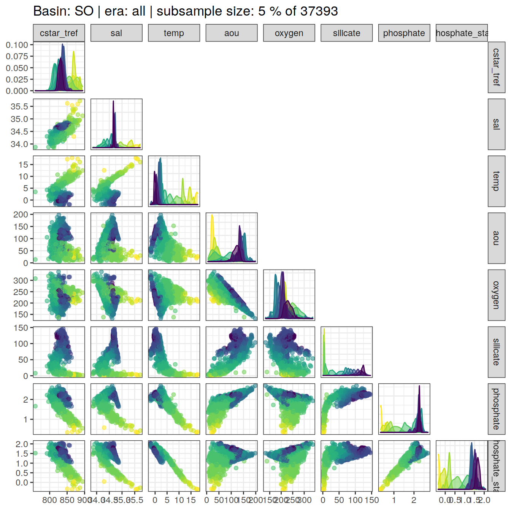
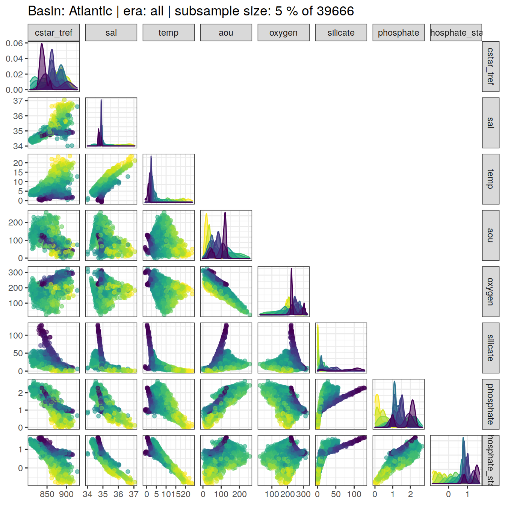
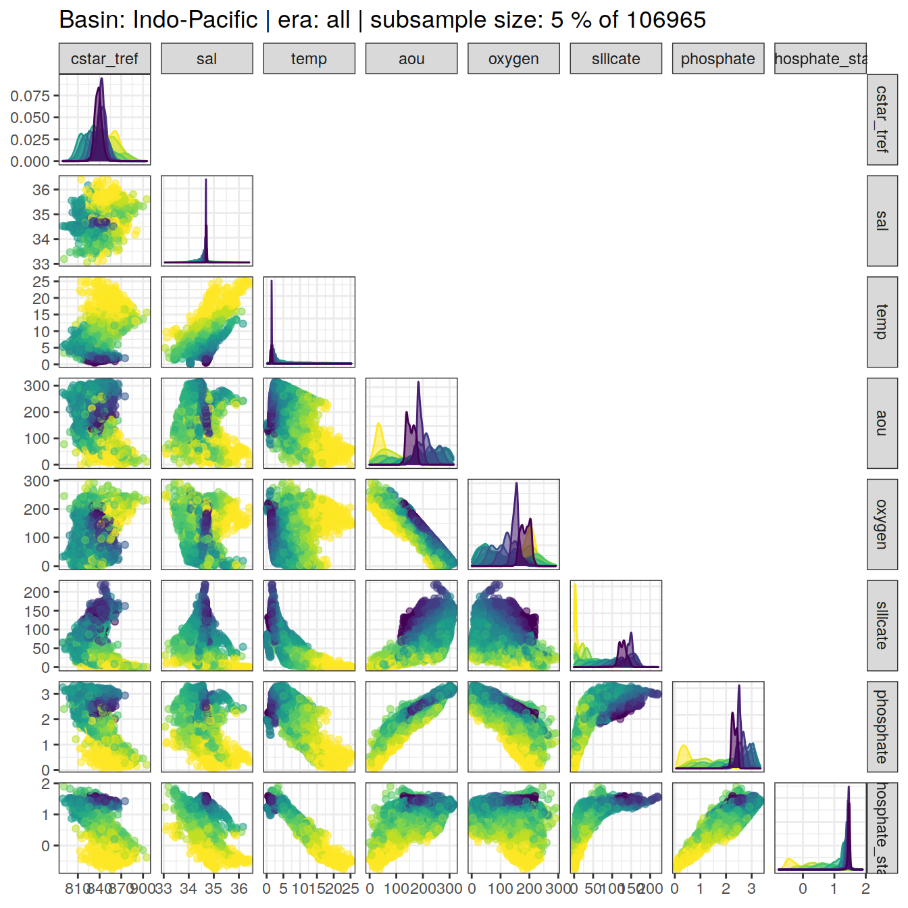
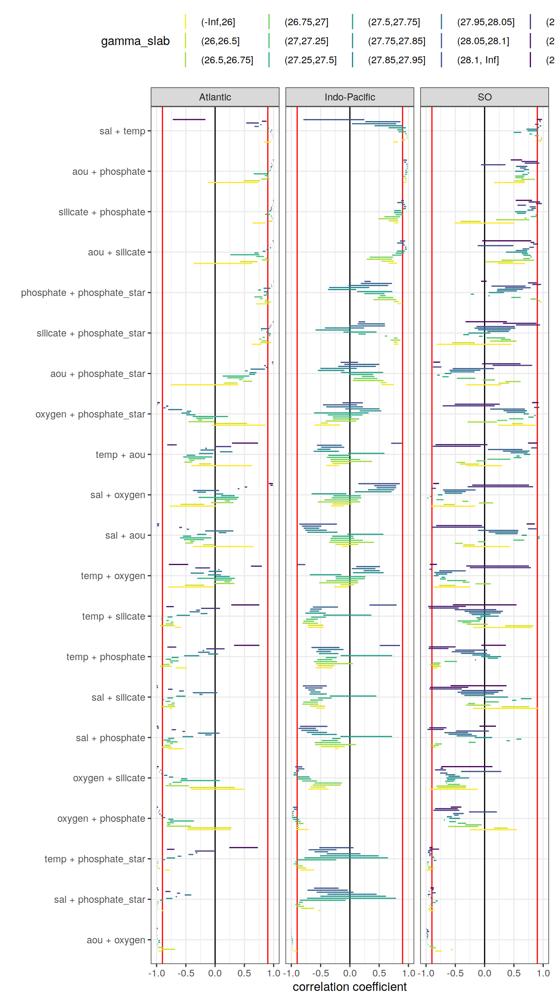
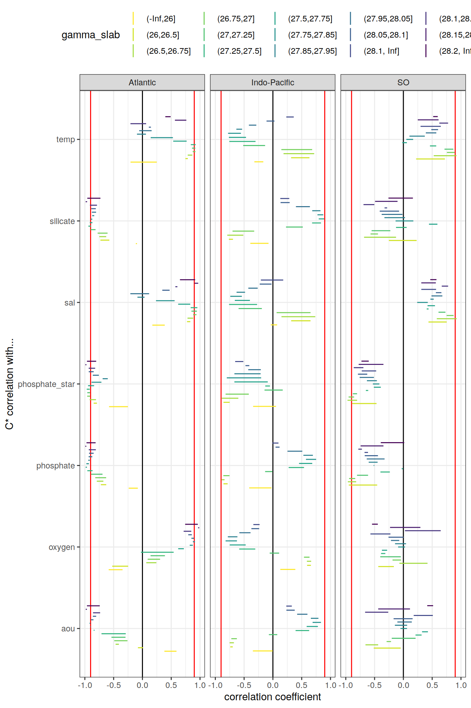

Last updated: 2020-12-23
Checks: 7 0
Knit directory: emlr_obs_v_104/
This reproducible R Markdown analysis was created with workflowr (version 1.6.2). The Checks tab describes the reproducibility checks that were applied when the results were created. The Past versions tab lists the development history.
Great! Since the R Markdown file has been committed to the Git repository, you know the exact version of the code that produced these results.
Great job! The global environment was empty. Objects defined in the global environment can affect the analysis in your R Markdown file in unknown ways. For reproduciblity it’s best to always run the code in an empty environment.
The command set.seed(20200707) was run prior to running the code in the R Markdown file. Setting a seed ensures that any results that rely on randomness, e.g. subsampling or permutations, are reproducible.
Great job! Recording the operating system, R version, and package versions is critical for reproducibility.
Nice! There were no cached chunks for this analysis, so you can be confident that you successfully produced the results during this run.
Great job! Using relative paths to the files within your workflowr project makes it easier to run your code on other machines.
Great! You are using Git for version control. Tracking code development and connecting the code version to the results is critical for reproducibility.
The results in this page were generated with repository version 5eda1b5. See the Past versions tab to see a history of the changes made to the R Markdown and HTML files.
Note that you need to be careful to ensure that all relevant files for the analysis have been committed to Git prior to generating the results (you can use wflow_publish or wflow_git_commit). workflowr only checks the R Markdown file, but you know if there are other scripts or data files that it depends on. Below is the status of the Git repository when the results were generated:
Ignored files:
Ignored: .Rproj.user/
Unstaged changes:
Modified: analysis/_site.yml
Modified: data/auxillary/params_local.rds
Note that any generated files, e.g. HTML, png, CSS, etc., are not included in this status report because it is ok for generated content to have uncommitted changes.
These are the previous versions of the repository in which changes were made to the R Markdown (analysis/eMLR_assumption_testing.Rmd) and HTML (docs/eMLR_assumption_testing.html) files. If you’ve configured a remote Git repository (see ?wflow_git_remote), click on the hyperlinks in the table below to view the files as they were in that past version.
| File | Version | Author | Date | Message |
|---|---|---|---|---|
| Rmd | 8af6f06 | Jens Müller | 2020-12-23 | Initial commit |
Required are:
GLODAP <-
read_csv(paste(path_version_data,
"GLODAPv2.2020_MLR_fitting_ready.csv",
sep = ""))The correlation between:
were investigated based on:
For an overview, a random subset of data from all eras was plotted separately for both basins, with color indicating neutral density slabs (high density = dark-purple color).
for (i_basin in unique(GLODAP$basin)) {
# i_basin <- unique(GLODAP$basin)[1]
print(
GLODAP %>%
filter(basin == i_basin) %>%
sample_frac(0.05) %>%
ggpairs(columns = c(params_local$MLR_target,
params_local$MLR_predictors),
upper = "blank",
ggplot2::aes(col = gamma_slab, fill = gamma_slab, alpha = 0.01)) +
scale_fill_viridis_d(direction = -1) +
scale_color_viridis_d(direction = -1) +
labs(title = paste("Basin:", i_basin ,"| era: all | subsample size: 5 % of",
nrow(GLODAP %>% filter(basin == i_basin))))
)
}
Individual correlation plots for each basin, era and neutral density (gamma) slab are available at:
/nfs/kryo/work/jenmueller/emlr_cant/observations/v_104/figures/Observations_correlation/
if (params_local$plot_all_figures == "y") {
for (i_basin in unique(GLODAP$basin)) {
for (i_era in unique(GLODAP$era)) {
# i_basin <- unique(GLODAP$basin)[1]
# i_era <- unique(GLODAP$era)[1]
GLODAP_basin_era <- GLODAP %>%
filter(basin == i_basin,
era == i_era)
for (i_gamma_slab in unique(GLODAP_basin_era$gamma_slab)) {
# i_gamma_slab <- unique(GLODAP_basin_era$gamma_slab)[5]
GLODAP_highlight <- GLODAP_basin_era %>%
mutate(gamma_highlight = if_else(gamma_slab == i_gamma_slab,
"in", "out")) %>%
arrange(desc(gamma_highlight))
p <- GLODAP_highlight %>%
ggpairs(
columns = c(params_local$MLR_target,
params_local$MLR_predictors),
ggplot2::aes(
col = gamma_highlight,
fill = gamma_highlight,
alpha = 0.01
)
) +
scale_fill_manual(values = c("red", "grey")) +
scale_color_manual(values = c("red", "grey")) +
labs(
title = paste(
i_era,
"|",
i_basin,
"| Gamma slab",
i_gamma_slab,
"| # obs total",
nrow(GLODAP_basin_era),
"| # obs slab",
nrow(GLODAP_highlight %>%
filter(gamma_highlight == "in"))
)
)
png(
filename = paste(
path_version_figures,
"Observations_correlation/",
paste(
"Predictor_correlation",
i_era,
i_basin,
i_gamma_slab,
".png",
sep = "_"
),
sep = ""),
width = 12,
height = 12,
units = "in",
res = 300
)
print(p)
dev.off()
}
}
}
}Correlation coefficients were calculated individually within each slabs, era and basin.
for (i_basin in unique(GLODAP$basin)) {
for (i_era in unique(GLODAP$era)) {
# i_basin <- unique(GLODAP$basin)[1]
# i_era <- unique(GLODAP$era)[1]
GLODAP_basin_era <- GLODAP %>%
filter(basin == i_basin,
era == i_era) %>%
select(basin,
era,
gamma_slab,
params_local$MLR_target,
params_local$MLR_predictors)
for (i_gamma_slab in unique(GLODAP_basin_era$gamma_slab)) {
# i_gamma_slab <- unique(GLODAP_basin_era$gamma_slab)[5]
print(i_gamma_slab)
GLODAP_basin_era_slab <- GLODAP_basin_era %>%
filter(gamma_slab == i_gamma_slab)
# calculate correlation table
cor_target_predictor_temp <- GLODAP_basin_era_slab %>%
select(-c(basin, era, gamma_slab)) %>%
correlate() %>%
focus(params_local$MLR_target) %>%
mutate(basin = i_basin,
era = i_era,
gamma_slab = i_gamma_slab)
if (exists("cor_target_predictor")) {
cor_target_predictor <-
bind_rows(cor_target_predictor, cor_target_predictor_temp)
}
if (!exists("cor_target_predictor")) {
cor_target_predictor <- cor_target_predictor_temp
}
cor_predictors_temp <- GLODAP_basin_era_slab %>%
select(-c(basin, era, gamma_slab)) %>%
correlate() %>%
shave %>%
stretch() %>%
filter(!is.na(r),
x != params_local$MLR_target,
y != params_local$MLR_target) %>%
mutate(pair = paste(x, y, sep = " + ")) %>%
select(-c(x, y)) %>%
mutate(basin = i_basin,
era = i_era,
gamma_slab = i_gamma_slab)
if (exists("cor_predictors")) {
cor_predictors <- bind_rows(cor_predictors, cor_predictors_temp)
}
if (!exists("cor_predictors")) {
cor_predictors <- cor_predictors_temp
}
}
}
}
rm(cor_predictors_temp, cor_target_predictor_temp,
i_gamma_slab, i_era, i_basin,
GLODAP_basin_era, GLODAP_basin_era_slab)Below, the range of correlations coefficients for each predictor pair is plotted per basin (facet) and density slab (color). Note that the range indicates the min and max values of in total 3 calculated coefficients (one per era).
# calculate min, max, mean across all eras
cor_predictors_stats <- cor_predictors %>%
group_by(pair, basin, gamma_slab) %>%
summarise(mean_r = mean(r),
min_r = min(r),
max_r = max(r)) %>%
ungroup()
# plot figure
cor_predictors_stats %>%
mutate(pair = reorder(pair, mean_r)) %>%
ggplot() +
geom_vline(xintercept = c(-0.9, 0.9), col = "red") +
geom_vline(xintercept = 0) +
geom_linerange(
aes(y = pair, xmin = min_r, xmax = max_r, col = gamma_slab),
position = position_dodge(width = 0.6)) +
facet_wrap(~basin) +
scale_color_viridis_d(direction = -1) +
labs(x = "correlation coefficient", y = "") +
theme(legend.position = "top")
# print table
kable(cor_predictors_stats) %>%
add_header_above() %>%
kable_styling() %>%
scroll_box(width = "100%", height = "400px")| pair | basin | gamma_slab | mean_r | min_r | max_r |
|---|---|---|---|---|---|
| aou + oxygen | Atlantic | (-Inf,26] | -0.9424657 | -0.9704822 | -0.9028871 |
| aou + oxygen | Atlantic | (26,26.5] | -0.8377548 | -0.9167655 | -0.6847899 |
| aou + oxygen | Atlantic | (26.5,26.75] | -0.9396047 | -0.9762511 | -0.8837634 |
| aou + oxygen | Atlantic | (26.75,27] | -0.9793847 | -0.9821128 | -0.9763072 |
| aou + oxygen | Atlantic | (27,27.25] | -0.9800199 | -0.9838720 | -0.9729040 |
| aou + oxygen | Atlantic | (27.25,27.5] | -0.9549327 | -0.9727712 | -0.9359897 |
| aou + oxygen | Atlantic | (27.5,27.75] | -0.9606332 | -0.9696855 | -0.9448202 |
| aou + oxygen | Atlantic | (27.75,27.85] | -0.9840533 | -0.9877706 | -0.9806849 |
| aou + oxygen | Atlantic | (27.85,27.95] | -0.9922089 | -0.9940238 | -0.9910808 |
| aou + oxygen | Atlantic | (27.95,28.05] | -0.9914653 | -0.9938653 | -0.9897067 |
| aou + oxygen | Atlantic | (28.05,28.1] | -0.9953300 | -0.9959362 | -0.9949539 |
| aou + oxygen | Atlantic | (28.1,28.15] | -0.9960245 | -0.9969075 | -0.9949342 |
| aou + oxygen | Atlantic | (28.15,28.2] | -0.9990217 | -0.9994499 | -0.9983028 |
| aou + oxygen | Atlantic | (28.2, Inf] | -0.9906228 | -0.9959606 | -0.9824941 |
| aou + oxygen | Indo-Pacific | (-Inf,26] | -0.9237613 | -0.9664646 | -0.8982774 |
| aou + oxygen | Indo-Pacific | (26,26.5] | -0.9818290 | -0.9864862 | -0.9744290 |
| aou + oxygen | Indo-Pacific | (26.5,26.75] | -0.9858323 | -0.9891888 | -0.9818313 |
| aou + oxygen | Indo-Pacific | (26.75,27] | -0.9780225 | -0.9821956 | -0.9722850 |
| aou + oxygen | Indo-Pacific | (27,27.25] | -0.9798310 | -0.9894465 | -0.9688428 |
| aou + oxygen | Indo-Pacific | (27.25,27.5] | -0.9851718 | -0.9940034 | -0.9717807 |
| aou + oxygen | Indo-Pacific | (27.5,27.75] | -0.9867071 | -0.9925115 | -0.9758137 |
| aou + oxygen | Indo-Pacific | (27.75,27.85] | -0.9959593 | -0.9986115 | -0.9909057 |
| aou + oxygen | Indo-Pacific | (27.85,27.95] | -0.9973387 | -0.9986166 | -0.9948130 |
| aou + oxygen | Indo-Pacific | (27.95,28.05] | -0.9969967 | -0.9982043 | -0.9949449 |
| aou + oxygen | Indo-Pacific | (28.05,28.1] | -0.9970254 | -0.9979640 | -0.9956795 |
| aou + oxygen | Indo-Pacific | (28.1, Inf] | -0.9968552 | -0.9991350 | -0.9951344 |
| aou + oxygen | SO | (-Inf,26] | -0.7899307 | -0.8451706 | -0.7346909 |
| aou + oxygen | SO | (26,26.5] | -0.5624889 | -0.5747227 | -0.5520038 |
| aou + oxygen | SO | (26.5,26.75] | -0.8784337 | -0.9237142 | -0.8319404 |
| aou + oxygen | SO | (26.75,27] | -0.9094013 | -0.9408085 | -0.8691256 |
| aou + oxygen | SO | (27,27.25] | -0.9688258 | -0.9728094 | -0.9621712 |
| aou + oxygen | SO | (27.25,27.5] | -0.9807904 | -0.9816791 | -0.9799971 |
| aou + oxygen | SO | (27.5,27.75] | -0.9845528 | -0.9856639 | -0.9824517 |
| aou + oxygen | SO | (27.75,27.85] | -0.9861822 | -0.9867879 | -0.9858090 |
| aou + oxygen | SO | (27.85,27.95] | -0.9800704 | -0.9856711 | -0.9727071 |
| aou + oxygen | SO | (27.95,28.05] | -0.9761017 | -0.9858873 | -0.9640357 |
| aou + oxygen | SO | (28.05,28.1] | -0.9736547 | -0.9820216 | -0.9623024 |
| aou + oxygen | SO | (28.1, Inf] | -0.9859924 | -0.9924791 | -0.9779701 |
| aou + oxygen | SO | (28.1,28.15] | -0.9625991 | -0.9842586 | -0.9483102 |
| aou + oxygen | SO | (28.15,28.2] | -0.9717669 | -0.9893271 | -0.9625070 |
| aou + oxygen | SO | (28.2, Inf] | -0.9945838 | -0.9967082 | -0.9921458 |
| aou + phosphate | Atlantic | (-Inf,26] | 0.3247813 | -0.1247887 | 0.7346817 |
| aou + phosphate | Atlantic | (26,26.5] | 0.6368211 | 0.4909339 | 0.7697078 |
| aou + phosphate | Atlantic | (26.5,26.75] | 0.8619911 | 0.7842011 | 0.9290390 |
| aou + phosphate | Atlantic | (26.75,27] | 0.8972204 | 0.8848096 | 0.9099419 |
| aou + phosphate | Atlantic | (27,27.25] | 0.8738910 | 0.8470847 | 0.9108120 |
| aou + phosphate | Atlantic | (27.25,27.5] | 0.7930892 | 0.6597462 | 0.8972703 |
| aou + phosphate | Atlantic | (27.5,27.75] | 0.9012905 | 0.8877458 | 0.9168642 |
| aou + phosphate | Atlantic | (27.75,27.85] | 0.9413060 | 0.9298603 | 0.9487741 |
| aou + phosphate | Atlantic | (27.85,27.95] | 0.9526885 | 0.9496572 | 0.9564656 |
| aou + phosphate | Atlantic | (27.95,28.05] | 0.9619470 | 0.9442049 | 0.9732299 |
| aou + phosphate | Atlantic | (28.05,28.1] | 0.9722350 | 0.9681236 | 0.9776157 |
| aou + phosphate | Atlantic | (28.1,28.15] | 0.9649421 | 0.9612579 | 0.9676982 |
| aou + phosphate | Atlantic | (28.15,28.2] | 0.9953973 | 0.9938303 | 0.9962284 |
| aou + phosphate | Atlantic | (28.2, Inf] | 0.9909037 | 0.9872121 | 0.9962894 |
| aou + phosphate | Indo-Pacific | (-Inf,26] | 0.9435802 | 0.9146753 | 0.9693966 |
| aou + phosphate | Indo-Pacific | (26,26.5] | 0.9570167 | 0.9505848 | 0.9673687 |
| aou + phosphate | Indo-Pacific | (26.5,26.75] | 0.9505976 | 0.9341490 | 0.9656884 |
| aou + phosphate | Indo-Pacific | (26.75,27] | 0.9332553 | 0.9083457 | 0.9500429 |
| aou + phosphate | Indo-Pacific | (27,27.25] | 0.9609813 | 0.9416227 | 0.9735062 |
| aou + phosphate | Indo-Pacific | (27.25,27.5] | 0.9649192 | 0.9461358 | 0.9825729 |
| aou + phosphate | Indo-Pacific | (27.5,27.75] | 0.9631458 | 0.9520285 | 0.9735980 |
| aou + phosphate | Indo-Pacific | (27.75,27.85] | 0.9793661 | 0.9729382 | 0.9853896 |
| aou + phosphate | Indo-Pacific | (27.85,27.95] | 0.9799119 | 0.9720040 | 0.9848918 |
| aou + phosphate | Indo-Pacific | (27.95,28.05] | 0.9743477 | 0.9648089 | 0.9826903 |
| aou + phosphate | Indo-Pacific | (28.05,28.1] | 0.9490055 | 0.9271731 | 0.9607242 |
| aou + phosphate | Indo-Pacific | (28.1, Inf] | 0.9431257 | 0.9137471 | 0.9743503 |
| aou + phosphate | SO | (-Inf,26] | 0.4244068 | 0.1593650 | 0.6894486 |
| aou + phosphate | SO | (26,26.5] | 0.5740870 | 0.5056555 | 0.6805249 |
| aou + phosphate | SO | (26.5,26.75] | 0.7446273 | 0.6263118 | 0.8618710 |
| aou + phosphate | SO | (26.75,27] | 0.5941303 | 0.5229754 | 0.6649145 |
| aou + phosphate | SO | (27,27.25] | 0.5956755 | 0.5226541 | 0.6788397 |
| aou + phosphate | SO | (27.25,27.5] | 0.6898839 | 0.6427278 | 0.7357894 |
| aou + phosphate | SO | (27.5,27.75] | 0.7540268 | 0.7378006 | 0.7625141 |
| aou + phosphate | SO | (27.75,27.85] | 0.6095670 | 0.5197739 | 0.6717913 |
| aou + phosphate | SO | (27.85,27.95] | 0.7153588 | 0.6658145 | 0.7573111 |
| aou + phosphate | SO | (27.95,28.05] | 0.6520275 | 0.6051295 | 0.7029822 |
| aou + phosphate | SO | (28.05,28.1] | 0.6199640 | 0.5355312 | 0.7304107 |
| aou + phosphate | SO | (28.1, Inf] | 0.0822325 | -0.0619598 | 0.3552698 |
| aou + phosphate | SO | (28.1,28.15] | 0.7997898 | 0.6846527 | 0.9366111 |
| aou + phosphate | SO | (28.15,28.2] | 0.7809492 | 0.6300748 | 0.9056022 |
| aou + phosphate | SO | (28.2, Inf] | 0.5373894 | 0.4469714 | 0.6402231 |
| aou + phosphate_star | Atlantic | (-Inf,26] | -0.2541165 | -0.7587303 | 0.3930499 |
| aou + phosphate_star | Atlantic | (26,26.5] | 0.2493155 | 0.1483059 | 0.3819840 |
| aou + phosphate_star | Atlantic | (26.5,26.75] | 0.5323856 | 0.4751240 | 0.6324411 |
| aou + phosphate_star | Atlantic | (26.75,27] | 0.4397766 | 0.4076322 | 0.4660360 |
| aou + phosphate_star | Atlantic | (27,27.25] | 0.3497727 | 0.2066489 | 0.4885694 |
| aou + phosphate_star | Atlantic | (27.25,27.5] | 0.3766776 | 0.1283392 | 0.5830891 |
| aou + phosphate_star | Atlantic | (27.5,27.75] | 0.6223690 | 0.5788021 | 0.6835974 |
| aou + phosphate_star | Atlantic | (27.75,27.85] | 0.6348725 | 0.5872364 | 0.7055970 |
| aou + phosphate_star | Atlantic | (27.85,27.95] | 0.5369290 | 0.5121301 | 0.5546723 |
| aou + phosphate_star | Atlantic | (27.95,28.05] | 0.7637608 | 0.6052293 | 0.8511304 |
| aou + phosphate_star | Atlantic | (28.05,28.1] | 0.8848481 | 0.8684369 | 0.9044895 |
| aou + phosphate_star | Atlantic | (28.1,28.15] | 0.8534438 | 0.8390984 | 0.8647156 |
| aou + phosphate_star | Atlantic | (28.15,28.2] | 0.9857882 | 0.9814953 | 0.9888554 |
| aou + phosphate_star | Atlantic | (28.2, Inf] | 0.9809207 | 0.9707329 | 0.9914251 |
| aou + phosphate_star | Indo-Pacific | (-Inf,26] | 0.6711541 | 0.5380342 | 0.7539327 |
| aou + phosphate_star | Indo-Pacific | (26,26.5] | 0.5893806 | 0.5229855 | 0.6251290 |
| aou + phosphate_star | Indo-Pacific | (26.5,26.75] | 0.3851851 | 0.0496814 | 0.5753522 |
| aou + phosphate_star | Indo-Pacific | (26.75,27] | 0.3005677 | 0.0683949 | 0.4720169 |
| aou + phosphate_star | Indo-Pacific | (27,27.25] | 0.3389397 | 0.2043518 | 0.4186167 |
| aou + phosphate_star | Indo-Pacific | (27.25,27.5] | 0.1572375 | -0.0061598 | 0.3959225 |
| aou + phosphate_star | Indo-Pacific | (27.5,27.75] | 0.1069942 | -0.1525891 | 0.5688725 |
| aou + phosphate_star | Indo-Pacific | (27.75,27.85] | -0.3141064 | -0.5477906 | -0.0948844 |
| aou + phosphate_star | Indo-Pacific | (27.85,27.95] | -0.1347896 | -0.5028258 | 0.1180061 |
| aou + phosphate_star | Indo-Pacific | (27.95,28.05] | 0.1970691 | -0.1988926 | 0.4444885 |
| aou + phosphate_star | Indo-Pacific | (28.05,28.1] | 0.2472213 | -0.0937925 | 0.5014149 |
| aou + phosphate_star | Indo-Pacific | (28.1, Inf] | -0.0283422 | -0.1584483 | 0.1393614 |
| aou + phosphate_star | SO | (-Inf,26] | -0.0122014 | -0.3126945 | 0.2882917 |
| aou + phosphate_star | SO | (26,26.5] | 0.3330854 | 0.2369826 | 0.4201865 |
| aou + phosphate_star | SO | (26.5,26.75] | 0.4574390 | 0.3531124 | 0.6155456 |
| aou + phosphate_star | SO | (26.75,27] | 0.0833836 | -0.0328894 | 0.1764988 |
| aou + phosphate_star | SO | (27,27.25] | -0.3611802 | -0.4732352 | -0.1586670 |
| aou + phosphate_star | SO | (27.25,27.5] | -0.6629889 | -0.7217738 | -0.6136205 |
| aou + phosphate_star | SO | (27.5,27.75] | -0.7853771 | -0.8104736 | -0.7656484 |
| aou + phosphate_star | SO | (27.75,27.85] | -0.6240577 | -0.6816415 | -0.5642629 |
| aou + phosphate_star | SO | (27.85,27.95] | -0.3779808 | -0.5856814 | -0.1715477 |
| aou + phosphate_star | SO | (27.95,28.05] | -0.3744468 | -0.6006477 | -0.0718036 |
| aou + phosphate_star | SO | (28.05,28.1] | -0.2796884 | -0.5446631 | 0.1605999 |
| aou + phosphate_star | SO | (28.1, Inf] | -0.8323881 | -0.8835684 | -0.7393347 |
| aou + phosphate_star | SO | (28.1,28.15] | 0.4279759 | 0.1370814 | 0.8135392 |
| aou + phosphate_star | SO | (28.15,28.2] | 0.3118367 | -0.0436816 | 0.6135283 |
| aou + phosphate_star | SO | (28.2, Inf] | -0.8381181 | -0.8776088 | -0.7603684 |
| aou + silicate | Atlantic | (-Inf,26] | 0.1207174 | -0.3666368 | 0.6366433 |
| aou + silicate | Atlantic | (26,26.5] | 0.5847594 | 0.4244852 | 0.7232235 |
| aou + silicate | Atlantic | (26.5,26.75] | 0.8718294 | 0.7982287 | 0.9318810 |
| aou + silicate | Atlantic | (26.75,27] | 0.8702270 | 0.8607170 | 0.8819194 |
| aou + silicate | Atlantic | (27,27.25] | 0.7696082 | 0.7033193 | 0.8341645 |
| aou + silicate | Atlantic | (27.25,27.5] | 0.5493005 | 0.2602372 | 0.7550927 |
| aou + silicate | Atlantic | (27.5,27.75] | 0.6999149 | 0.6698449 | 0.7397064 |
| aou + silicate | Atlantic | (27.75,27.85] | 0.8339961 | 0.8114824 | 0.8610781 |
| aou + silicate | Atlantic | (27.85,27.95] | 0.8967923 | 0.8762246 | 0.9134430 |
| aou + silicate | Atlantic | (27.95,28.05] | 0.9428596 | 0.9362607 | 0.9546939 |
| aou + silicate | Atlantic | (28.05,28.1] | 0.9714292 | 0.9703139 | 0.9732409 |
| aou + silicate | Atlantic | (28.1,28.15] | 0.9520162 | 0.9500354 | 0.9537306 |
| aou + silicate | Atlantic | (28.15,28.2] | 0.9955982 | 0.9939511 | 0.9972638 |
| aou + silicate | Atlantic | (28.2, Inf] | 0.9893362 | 0.9846703 | 0.9950542 |
| aou + silicate | Indo-Pacific | (-Inf,26] | 0.7348532 | 0.6616171 | 0.8057112 |
| aou + silicate | Indo-Pacific | (26,26.5] | 0.6516562 | 0.5337421 | 0.7495142 |
| aou + silicate | Indo-Pacific | (26.5,26.75] | 0.5655244 | 0.2854478 | 0.7211632 |
| aou + silicate | Indo-Pacific | (26.75,27] | 0.5961244 | 0.3401987 | 0.7367997 |
| aou + silicate | Indo-Pacific | (27,27.25] | 0.7868109 | 0.7204706 | 0.8841269 |
| aou + silicate | Indo-Pacific | (27.25,27.5] | 0.8518475 | 0.7824522 | 0.9238654 |
| aou + silicate | Indo-Pacific | (27.5,27.75] | 0.8889253 | 0.8031528 | 0.9393769 |
| aou + silicate | Indo-Pacific | (27.75,27.85] | 0.9527185 | 0.9370337 | 0.9739185 |
| aou + silicate | Indo-Pacific | (27.85,27.95] | 0.9518834 | 0.9421651 | 0.9674716 |
| aou + silicate | Indo-Pacific | (27.95,28.05] | 0.9163976 | 0.8940940 | 0.9377303 |
| aou + silicate | Indo-Pacific | (28.05,28.1] | 0.8764375 | 0.8076247 | 0.9243107 |
| aou + silicate | Indo-Pacific | (28.1, Inf] | 0.8909194 | 0.8557315 | 0.9450339 |
| aou + silicate | SO | (-Inf,26] | 0.4545800 | 0.2205450 | 0.6886149 |
| aou + silicate | SO | (26,26.5] | 0.1924532 | 0.0080098 | 0.4837727 |
| aou + silicate | SO | (26.5,26.75] | 0.5367748 | 0.2863538 | 0.8499134 |
| aou + silicate | SO | (26.75,27] | 0.7290735 | 0.6580128 | 0.7737984 |
| aou + silicate | SO | (27,27.25] | 0.7896671 | 0.7793455 | 0.8066215 |
| aou + silicate | SO | (27.25,27.5] | 0.7278588 | 0.6625855 | 0.7908272 |
| aou + silicate | SO | (27.5,27.75] | 0.6859231 | 0.6350381 | 0.7412539 |
| aou + silicate | SO | (27.75,27.85] | 0.5565859 | 0.3658315 | 0.7267102 |
| aou + silicate | SO | (27.85,27.95] | 0.6450907 | 0.5316843 | 0.7280238 |
| aou + silicate | SO | (27.95,28.05] | 0.7242922 | 0.6482657 | 0.7633606 |
| aou + silicate | SO | (28.05,28.1] | 0.8163725 | 0.7653878 | 0.8440920 |
| aou + silicate | SO | (28.1, Inf] | 0.1759792 | -0.1188945 | 0.4913639 |
| aou + silicate | SO | (28.1,28.15] | 0.8745685 | 0.8253162 | 0.9148100 |
| aou + silicate | SO | (28.15,28.2] | 0.8224627 | 0.7832200 | 0.8490390 |
| aou + silicate | SO | (28.2, Inf] | 0.3829540 | -0.0407876 | 0.7956067 |
| oxygen + phosphate | Atlantic | (-Inf,26] | -0.1202396 | -0.4784692 | 0.2710241 |
| oxygen + phosphate | Atlantic | (26,26.5] | -0.1622999 | -0.4689379 | 0.2777608 |
| oxygen + phosphate | Atlantic | (26.5,26.75] | -0.6468731 | -0.8296484 | -0.4098192 |
| oxygen + phosphate | Atlantic | (26.75,27] | -0.7921834 | -0.8179652 | -0.7652735 |
| oxygen + phosphate | Atlantic | (27,27.25] | -0.7631818 | -0.8218738 | -0.7047398 |
| oxygen + phosphate | Atlantic | (27.25,27.5] | -0.5876268 | -0.7743935 | -0.3630992 |
| oxygen + phosphate | Atlantic | (27.5,27.75] | -0.7678085 | -0.8002192 | -0.7128122 |
| oxygen + phosphate | Atlantic | (27.75,27.85] | -0.8769562 | -0.8965764 | -0.8510996 |
| oxygen + phosphate | Atlantic | (27.85,27.95] | -0.9180256 | -0.9257855 | -0.9108529 |
| oxygen + phosphate | Atlantic | (27.95,28.05] | -0.9461632 | -0.9550618 | -0.9301612 |
| oxygen + phosphate | Atlantic | (28.05,28.1] | -0.9638632 | -0.9691390 | -0.9590185 |
| oxygen + phosphate | Atlantic | (28.1,28.15] | -0.9479232 | -0.9547087 | -0.9411315 |
| oxygen + phosphate | Atlantic | (28.15,28.2] | -0.9937484 | -0.9954016 | -0.9923710 |
| oxygen + phosphate | Atlantic | (28.2, Inf] | -0.9890197 | -0.9955037 | -0.9767689 |
| oxygen + phosphate | Indo-Pacific | (-Inf,26] | -0.7942693 | -0.9140963 | -0.7061670 |
| oxygen + phosphate | Indo-Pacific | (26,26.5] | -0.8912976 | -0.9189835 | -0.8630112 |
| oxygen + phosphate | Indo-Pacific | (26.5,26.75] | -0.8902993 | -0.9219583 | -0.8678737 |
| oxygen + phosphate | Indo-Pacific | (26.75,27] | -0.8430263 | -0.8787149 | -0.7920358 |
| oxygen + phosphate | Indo-Pacific | (27,27.25] | -0.8974062 | -0.9359510 | -0.8396852 |
| oxygen + phosphate | Indo-Pacific | (27.25,27.5] | -0.9358358 | -0.9712874 | -0.8657160 |
| oxygen + phosphate | Indo-Pacific | (27.5,27.75] | -0.9547969 | -0.9884152 | -0.9014276 |
| oxygen + phosphate | Indo-Pacific | (27.75,27.85] | -0.9765105 | -0.9836235 | -0.9624267 |
| oxygen + phosphate | Indo-Pacific | (27.85,27.95] | -0.9774047 | -0.9858306 | -0.9668333 |
| oxygen + phosphate | Indo-Pacific | (27.95,28.05] | -0.9681846 | -0.9799481 | -0.9555014 |
| oxygen + phosphate | Indo-Pacific | (28.05,28.1] | -0.9367458 | -0.9525648 | -0.9099990 |
| oxygen + phosphate | Indo-Pacific | (28.1, Inf] | -0.9264228 | -0.9720546 | -0.8887043 |
| oxygen + phosphate | SO | (-Inf,26] | 0.1482365 | -0.2535884 | 0.5500615 |
| oxygen + phosphate | SO | (26,26.5] | 0.2851945 | 0.1552170 | 0.3996585 |
| oxygen + phosphate | SO | (26.5,26.75] | -0.3751035 | -0.6267990 | -0.1080783 |
| oxygen + phosphate | SO | (26.75,27] | -0.2278627 | -0.3326791 | -0.0485875 |
| oxygen + phosphate | SO | (27,27.25] | -0.3887823 | -0.4577958 | -0.3152427 |
| oxygen + phosphate | SO | (27.25,27.5] | -0.5505496 | -0.6064743 | -0.4931551 |
| oxygen + phosphate | SO | (27.5,27.75] | -0.6843051 | -0.6950906 | -0.6786975 |
| oxygen + phosphate | SO | (27.75,27.85] | -0.5209028 | -0.6034043 | -0.4202522 |
| oxygen + phosphate | SO | (27.85,27.95] | -0.5898329 | -0.6457093 | -0.5592378 |
| oxygen + phosphate | SO | (27.95,28.05] | -0.4890773 | -0.5205115 | -0.4435663 |
| oxygen + phosphate | SO | (28.05,28.1] | -0.4453139 | -0.5382602 | -0.3561948 |
| oxygen + phosphate | SO | (28.1, Inf] | 0.0460305 | -0.2669513 | 0.2095342 |
| oxygen + phosphate | SO | (28.1,28.15] | -0.6281758 | -0.8764802 | -0.4323047 |
| oxygen + phosphate | SO | (28.15,28.2] | -0.6486746 | -0.8479985 | -0.4594403 |
| oxygen + phosphate | SO | (28.2, Inf] | -0.4742319 | -0.5783324 | -0.3969163 |
| oxygen + phosphate_star | Atlantic | (-Inf,26] | 0.4681860 | -0.0541155 | 0.8578528 |
| oxygen + phosphate_star | Atlantic | (26,26.5] | 0.2700444 | 0.0029888 | 0.5481539 |
| oxygen + phosphate_star | Atlantic | (26.5,26.75] | -0.2306968 | -0.4530253 | -0.0141622 |
| oxygen + phosphate_star | Atlantic | (26.75,27] | -0.2528606 | -0.2941798 | -0.2203590 |
| oxygen + phosphate_star | Atlantic | (27,27.25] | -0.1625940 | -0.3234237 | -0.0322361 |
| oxygen + phosphate_star | Atlantic | (27.25,27.5] | -0.1009368 | -0.3833784 | 0.2206436 |
| oxygen + phosphate_star | Atlantic | (27.5,27.75] | -0.4063417 | -0.4925144 | -0.3354087 |
| oxygen + phosphate_star | Atlantic | (27.75,27.85] | -0.5029721 | -0.5755314 | -0.4320476 |
| oxygen + phosphate_star | Atlantic | (27.85,27.95] | -0.4462115 | -0.4842241 | -0.4082013 |
| oxygen + phosphate_star | Atlantic | (27.95,28.05] | -0.7205200 | -0.8031151 | -0.5642810 |
| oxygen + phosphate_star | Atlantic | (28.05,28.1] | -0.8646007 | -0.8837096 | -0.8465082 |
| oxygen + phosphate_star | Atlantic | (28.1,28.15] | -0.8193251 | -0.8380773 | -0.7988472 |
| oxygen + phosphate_star | Atlantic | (28.15,28.2] | -0.9823501 | -0.9871014 | -0.9785931 |
| oxygen + phosphate_star | Atlantic | (28.2, Inf] | -0.9727459 | -0.9873752 | -0.9453918 |
| oxygen + phosphate_star | Indo-Pacific | (-Inf,26] | -0.3885763 | -0.6055494 | -0.1641687 |
| oxygen + phosphate_star | Indo-Pacific | (26,26.5] | -0.4364357 | -0.4924692 | -0.3751264 |
| oxygen + phosphate_star | Indo-Pacific | (26.5,26.75] | -0.2387690 | -0.4158261 | 0.1078941 |
| oxygen + phosphate_star | Indo-Pacific | (26.75,27] | -0.1054458 | -0.2903856 | 0.1596067 |
| oxygen + phosphate_star | Indo-Pacific | (27,27.25] | -0.1640480 | -0.2929137 | 0.0324133 |
| oxygen + phosphate_star | Indo-Pacific | (27.25,27.5] | -0.0573264 | -0.3786542 | 0.2167711 |
| oxygen + phosphate_star | Indo-Pacific | (27.5,27.75] | -0.0698264 | -0.6120926 | 0.3188128 |
| oxygen + phosphate_star | Indo-Pacific | (27.75,27.85] | 0.3406163 | 0.1663521 | 0.5368938 |
| oxygen + phosphate_star | Indo-Pacific | (27.85,27.95] | 0.1566247 | -0.0786577 | 0.5057109 |
| oxygen + phosphate_star | Indo-Pacific | (27.95,28.05] | -0.1647374 | -0.4026546 | 0.2231405 |
| oxygen + phosphate_star | Indo-Pacific | (28.05,28.1] | -0.2080945 | -0.4595168 | 0.1217417 |
| oxygen + phosphate_star | Indo-Pacific | (28.1, Inf] | 0.0759355 | -0.1262169 | 0.2219830 |
| oxygen + phosphate_star | SO | (-Inf,26] | 0.5491684 | 0.2251347 | 0.8732022 |
| oxygen + phosphate_star | SO | (26,26.5] | 0.5466355 | 0.4674147 | 0.6528314 |
| oxygen + phosphate_star | SO | (26.5,26.75] | -0.0143637 | -0.2902609 | 0.2096902 |
| oxygen + phosphate_star | SO | (26.75,27] | 0.3196606 | 0.2132978 | 0.3878568 |
| oxygen + phosphate_star | SO | (27,27.25] | 0.5732358 | 0.4180365 | 0.6628599 |
| oxygen + phosphate_star | SO | (27.25,27.5] | 0.7881883 | 0.7461162 | 0.8369003 |
| oxygen + phosphate_star | SO | (27.5,27.75] | 0.8557300 | 0.8458763 | 0.8727378 |
| oxygen + phosphate_star | SO | (27.75,27.85] | 0.7129979 | 0.6672350 | 0.7544587 |
| oxygen + phosphate_star | SO | (27.85,27.95] | 0.5319064 | 0.3768808 | 0.6950227 |
| oxygen + phosphate_star | SO | (27.95,28.05] | 0.5524111 | 0.3221167 | 0.7203238 |
| oxygen + phosphate_star | SO | (28.05,28.1] | 0.4690112 | 0.0938990 | 0.6869267 |
| oxygen + phosphate_star | SO | (28.1, Inf] | 0.9014353 | 0.8446178 | 0.9337560 |
| oxygen + phosphate_star | SO | (28.1,28.15] | -0.2011189 | -0.7179511 | 0.1719000 |
| oxygen + phosphate_star | SO | (28.15,28.2] | -0.1252677 | -0.5108672 | 0.2577046 |
| oxygen + phosphate_star | SO | (28.2, Inf] | 0.8782160 | 0.8110066 | 0.9202902 |
| oxygen + silicate | Atlantic | (-Inf,26] | 0.0734740 | -0.4110366 | 0.4865843 |
| oxygen + silicate | Atlantic | (26,26.5] | -0.1293195 | -0.4406987 | 0.3387000 |
| oxygen + silicate | Atlantic | (26.5,26.75] | -0.6776101 | -0.8467623 | -0.4501547 |
| oxygen + silicate | Atlantic | (26.75,27] | -0.7657588 | -0.7876391 | -0.7459973 |
| oxygen + silicate | Atlantic | (27,27.25] | -0.6371494 | -0.7272201 | -0.5700379 |
| oxygen + silicate | Atlantic | (27.25,27.5] | -0.3021840 | -0.5932904 | 0.0789815 |
| oxygen + silicate | Atlantic | (27.5,27.75] | -0.5199677 | -0.5809226 | -0.4752013 |
| oxygen + silicate | Atlantic | (27.75,27.85] | -0.7446649 | -0.7881535 | -0.7156297 |
| oxygen + silicate | Atlantic | (27.85,27.95] | -0.8451191 | -0.8730788 | -0.8152128 |
| oxygen + silicate | Atlantic | (27.95,28.05] | -0.9029952 | -0.9186398 | -0.8868369 |
| oxygen + silicate | Atlantic | (28.05,28.1] | -0.9520814 | -0.9573541 | -0.9485578 |
| oxygen + silicate | Atlantic | (28.1,28.15] | -0.9262437 | -0.9332664 | -0.9218112 |
| oxygen + silicate | Atlantic | (28.15,28.2] | -0.9921977 | -0.9954335 | -0.9896281 |
| oxygen + silicate | Atlantic | (28.2, Inf] | -0.9843136 | -0.9941383 | -0.9647184 |
| oxygen + silicate | Indo-Pacific | (-Inf,26] | -0.5114197 | -0.7064680 | -0.3630506 |
| oxygen + silicate | Indo-Pacific | (26,26.5] | -0.5378711 | -0.6704276 | -0.4123045 |
| oxygen + silicate | Indo-Pacific | (26.5,26.75] | -0.4490772 | -0.6355537 | -0.1524512 |
| oxygen + silicate | Indo-Pacific | (26.75,27] | -0.4421880 | -0.6035328 | -0.1366541 |
| oxygen + silicate | Indo-Pacific | (27,27.25] | -0.6720271 | -0.8180664 | -0.5617736 |
| oxygen + silicate | Indo-Pacific | (27.25,27.5] | -0.7773637 | -0.8870992 | -0.6616632 |
| oxygen + silicate | Indo-Pacific | (27.5,27.75] | -0.8281096 | -0.9041269 | -0.6896343 |
| oxygen + silicate | Indo-Pacific | (27.75,27.85] | -0.9318534 | -0.9647200 | -0.8964734 |
| oxygen + silicate | Indo-Pacific | (27.85,27.95] | -0.9340023 | -0.9569381 | -0.9185125 |
| oxygen + silicate | Indo-Pacific | (27.95,28.05] | -0.8903341 | -0.9207214 | -0.8659065 |
| oxygen + silicate | Indo-Pacific | (28.05,28.1] | -0.8475136 | -0.9032663 | -0.7766825 |
| oxygen + silicate | Indo-Pacific | (28.1, Inf] | -0.8596177 | -0.9355232 | -0.8118209 |
| oxygen + silicate | SO | (-Inf,26] | -0.5295429 | -0.9430240 | -0.1160617 |
| oxygen + silicate | SO | (26,26.5] | -0.6232327 | -0.8032076 | -0.3232677 |
| oxygen + silicate | SO | (26.5,26.75] | -0.5560554 | -0.8268236 | -0.3121179 |
| oxygen + silicate | SO | (26.75,27] | -0.5591881 | -0.6329500 | -0.4234208 |
| oxygen + silicate | SO | (27,27.25] | -0.6481989 | -0.6563154 | -0.6398792 |
| oxygen + silicate | SO | (27.25,27.5] | -0.5962924 | -0.6735759 | -0.5203053 |
| oxygen + silicate | SO | (27.5,27.75] | -0.5729903 | -0.6404766 | -0.5018122 |
| oxygen + silicate | SO | (27.75,27.85] | -0.4614584 | -0.6524176 | -0.2650939 |
| oxygen + silicate | SO | (27.85,27.95] | -0.5183827 | -0.6174783 | -0.4201055 |
| oxygen + silicate | SO | (27.95,28.05] | -0.5870016 | -0.6668602 | -0.5036981 |
| oxygen + silicate | SO | (28.05,28.1] | -0.6973317 | -0.7601306 | -0.6342192 |
| oxygen + silicate | SO | (28.1, Inf] | -0.0460942 | -0.4011201 | 0.2843918 |
| oxygen + silicate | SO | (28.1,28.15] | -0.7442266 | -0.8482697 | -0.6584655 |
| oxygen + silicate | SO | (28.15,28.2] | -0.7246383 | -0.7534780 | -0.7091399 |
| oxygen + silicate | SO | (28.2, Inf] | -0.3202433 | -0.7406075 | 0.1337650 |
| phosphate + phosphate_star | Atlantic | (-Inf,26] | 0.7759063 | 0.6978481 | 0.9027102 |
| phosphate + phosphate_star | Atlantic | (26,26.5] | 0.8945460 | 0.8460904 | 0.9557219 |
| phosphate + phosphate_star | Atlantic | (26.5,26.75] | 0.8812928 | 0.8524367 | 0.9178792 |
| phosphate + phosphate_star | Atlantic | (26.75,27] | 0.7900356 | 0.7686639 | 0.8110020 |
| phosphate + phosphate_star | Atlantic | (27,27.25] | 0.7573203 | 0.6707370 | 0.8048657 |
| phosphate + phosphate_star | Atlantic | (27.25,27.5] | 0.8567133 | 0.8286715 | 0.8812459 |
| phosphate + phosphate_star | Atlantic | (27.5,27.75] | 0.8962622 | 0.8729284 | 0.9160476 |
| phosphate + phosphate_star | Atlantic | (27.75,27.85] | 0.8552471 | 0.8326979 | 0.8918523 |
| phosphate + phosphate_star | Atlantic | (27.85,27.95] | 0.7641914 | 0.7377189 | 0.7790595 |
| phosphate + phosphate_star | Atlantic | (27.95,28.05] | 0.9040909 | 0.8279862 | 0.9436307 |
| phosphate + phosphate_star | Atlantic | (28.05,28.1] | 0.9671951 | 0.9626621 | 0.9718152 |
| phosphate + phosphate_star | Atlantic | (28.1,28.15] | 0.9592373 | 0.9551632 | 0.9624442 |
| phosphate + phosphate_star | Atlantic | (28.15,28.2] | 0.9970909 | 0.9965005 | 0.9978979 |
| phosphate + phosphate_star | Atlantic | (28.2, Inf] | 0.9962898 | 0.9932759 | 0.9979396 |
| phosphate + phosphate_star | Indo-Pacific | (-Inf,26] | 0.8622065 | 0.8143692 | 0.8960219 |
| phosphate + phosphate_star | Indo-Pacific | (26,26.5] | 0.7946522 | 0.7537857 | 0.8344321 |
| phosphate + phosphate_star | Indo-Pacific | (26.5,26.75] | 0.6422685 | 0.4002464 | 0.7965312 |
| phosphate + phosphate_star | Indo-Pacific | (26.75,27] | 0.6161940 | 0.4762345 | 0.7402377 |
| phosphate + phosphate_star | Indo-Pacific | (27,27.25] | 0.5759001 | 0.5155711 | 0.6108384 |
| phosphate + phosphate_star | Indo-Pacific | (27.25,27.5] | 0.3797648 | 0.2477033 | 0.5906193 |
| phosphate + phosphate_star | Indo-Pacific | (27.5,27.75] | 0.3298992 | 0.1229519 | 0.7250226 |
| phosphate + phosphate_star | Indo-Pacific | (27.75,27.85] | -0.1367174 | -0.3760457 | 0.1076564 |
| phosphate + phosphate_star | Indo-Pacific | (27.85,27.95] | 0.0453014 | -0.3538324 | 0.3306657 |
| phosphate + phosphate_star | Indo-Pacific | (27.95,28.05] | 0.3898036 | -0.0244372 | 0.6547534 |
| phosphate + phosphate_star | Indo-Pacific | (28.05,28.1] | 0.5210229 | 0.1861052 | 0.7190122 |
| phosphate + phosphate_star | Indo-Pacific | (28.1, Inf] | 0.2919960 | 0.2497647 | 0.3555670 |
| phosphate + phosphate_star | SO | (-Inf,26] | 0.8863535 | 0.8853875 | 0.8873195 |
| phosphate + phosphate_star | SO | (26,26.5] | 0.9574186 | 0.9458747 | 0.9710954 |
| phosphate + phosphate_star | SO | (26.5,26.75] | 0.9274331 | 0.9053512 | 0.9493775 |
| phosphate + phosphate_star | SO | (26.75,27] | 0.8446925 | 0.7819132 | 0.9017860 |
| phosphate + phosphate_star | SO | (27,27.25] | 0.5246612 | 0.4561082 | 0.6162712 |
| phosphate + phosphate_star | SO | (27.25,27.5] | 0.0763629 | 0.0634454 | 0.0887515 |
| phosphate + phosphate_star | SO | (27.5,27.75] | -0.2087349 | -0.2343591 | -0.1823709 |
| phosphate + phosphate_star | SO | (27.75,27.85] | 0.2222146 | 0.0681512 | 0.3308023 |
| phosphate + phosphate_star | SO | (27.85,27.95] | 0.3571135 | 0.2073631 | 0.5517657 |
| phosphate + phosphate_star | SO | (27.95,28.05] | 0.4358480 | 0.2173292 | 0.6560606 |
| phosphate + phosphate_star | SO | (28.05,28.1] | 0.5475934 | 0.3487996 | 0.7885130 |
| phosphate + phosphate_star | SO | (28.1, Inf] | 0.4502756 | 0.1168047 | 0.7004616 |
| phosphate + phosphate_star | SO | (28.1,28.15] | 0.8758894 | 0.8139917 | 0.9643957 |
| phosphate + phosphate_star | SO | (28.15,28.2] | 0.8235666 | 0.7398084 | 0.8888330 |
| phosphate + phosphate_star | SO | (28.2, Inf] | -0.0061791 | -0.0618942 | 0.0351144 |
| sal + aou | Atlantic | (-Inf,26] | 0.2077992 | -0.3790852 | 0.6495725 |
| sal + aou | Atlantic | (26,26.5] | -0.1285004 | -0.2077167 | -0.0175538 |
| sal + aou | Atlantic | (26.5,26.75] | -0.4288751 | -0.5103347 | -0.3760329 |
| sal + aou | Atlantic | (26.75,27] | -0.3920446 | -0.4288584 | -0.3543425 |
| sal + aou | Atlantic | (27,27.25] | -0.3568762 | -0.5327512 | -0.1894335 |
| sal + aou | Atlantic | (27.25,27.5] | -0.3575973 | -0.5986734 | -0.0635710 |
| sal + aou | Atlantic | (27.5,27.75] | -0.4597449 | -0.5488204 | -0.4085554 |
| sal + aou | Atlantic | (27.75,27.85] | -0.2177069 | -0.3083585 | -0.1508922 |
| sal + aou | Atlantic | (27.85,27.95] | 0.1211771 | 0.0613330 | 0.1917089 |
| sal + aou | Atlantic | (27.95,28.05] | -0.0078767 | -0.1694216 | 0.3106371 |
| sal + aou | Atlantic | (28.05,28.1] | -0.4685152 | -0.4857093 | -0.4453539 |
| sal + aou | Atlantic | (28.1,28.15] | -0.5941103 | -0.6133749 | -0.5659234 |
| sal + aou | Atlantic | (28.15,28.2] | -0.9752166 | -0.9898179 | -0.9597515 |
| sal + aou | Atlantic | (28.2, Inf] | -0.9684037 | -0.9910360 | -0.9559952 |
| sal + aou | Indo-Pacific | (-Inf,26] | -0.0968145 | -0.1345739 | -0.0318879 |
| sal + aou | Indo-Pacific | (26,26.5] | -0.0381662 | -0.2446919 | 0.1448415 |
| sal + aou | Indo-Pacific | (26.5,26.75] | 0.0027306 | -0.3572940 | 0.4116646 |
| sal + aou | Indo-Pacific | (26.75,27] | -0.0295828 | -0.3324518 | 0.2210261 |
| sal + aou | Indo-Pacific | (27,27.25] | -0.1556795 | -0.3286659 | 0.0730439 |
| sal + aou | Indo-Pacific | (27.25,27.5] | -0.1735518 | -0.3018786 | 0.0588271 |
| sal + aou | Indo-Pacific | (27.5,27.75] | 0.1650508 | -0.0437871 | 0.5730315 |
| sal + aou | Indo-Pacific | (27.75,27.85] | -0.4976649 | -0.7292158 | -0.2119966 |
| sal + aou | Indo-Pacific | (27.85,27.95] | -0.6036971 | -0.7632070 | -0.3939688 |
| sal + aou | Indo-Pacific | (27.95,28.05] | -0.6974837 | -0.7876189 | -0.5236860 |
| sal + aou | Indo-Pacific | (28.05,28.1] | -0.6890579 | -0.8182000 | -0.4874701 |
| sal + aou | Indo-Pacific | (28.1, Inf] | -0.5620172 | -0.8636321 | -0.2214443 |
| sal + aou | SO | (-Inf,26] | 0.0272565 | -0.3767048 | 0.4312178 |
| sal + aou | SO | (26,26.5] | -0.2329416 | -0.3653585 | -0.1663295 |
| sal + aou | SO | (26.5,26.75] | -0.4596013 | -0.5075142 | -0.3724618 |
| sal + aou | SO | (26.75,27] | -0.0734987 | -0.1157037 | 0.0089903 |
| sal + aou | SO | (27,27.25] | 0.6109556 | 0.4920879 | 0.6776904 |
| sal + aou | SO | (27.25,27.5] | 0.9224096 | 0.9001509 | 0.9400187 |
| sal + aou | SO | (27.5,27.75] | 0.9278805 | 0.9131300 | 0.9379598 |
| sal + aou | SO | (27.75,27.85] | 0.6744081 | 0.6332316 | 0.7205073 |
| sal + aou | SO | (27.85,27.95] | 0.3541771 | 0.1826753 | 0.5631064 |
| sal + aou | SO | (27.95,28.05] | 0.3695727 | 0.0696536 | 0.5729122 |
| sal + aou | SO | (28.05,28.1] | 0.3133911 | -0.1141697 | 0.5749319 |
| sal + aou | SO | (28.1, Inf] | 0.8132891 | 0.7412945 | 0.8869557 |
| sal + aou | SO | (28.1,28.15] | -0.3850624 | -0.9008636 | -0.0143147 |
| sal + aou | SO | (28.15,28.2] | -0.3582277 | -0.8274444 | -0.0458484 |
| sal + aou | SO | (28.2, Inf] | 0.7662055 | 0.7177840 | 0.8559298 |
| sal + oxygen | Atlantic | (-Inf,26] | -0.4573470 | -0.7765966 | 0.0094070 |
| sal + oxygen | Atlantic | (26,26.5] | -0.3882945 | -0.5930160 | -0.1868088 |
| sal + oxygen | Atlantic | (26.5,26.75] | 0.1147615 | -0.0706863 | 0.3147800 |
| sal + oxygen | Atlantic | (26.75,27] | 0.2025124 | 0.1647548 | 0.2541940 |
| sal + oxygen | Atlantic | (27,27.25] | 0.1726137 | 0.0160321 | 0.3746867 |
| sal + oxygen | Atlantic | (27.25,27.5] | 0.0854149 | -0.2807260 | 0.4039143 |
| sal + oxygen | Atlantic | (27.5,27.75] | 0.2119048 | 0.1016566 | 0.3332570 |
| sal + oxygen | Atlantic | (27.75,27.85] | 0.0474055 | -0.0001744 | 0.1386934 |
| sal + oxygen | Atlantic | (27.85,27.95] | -0.2304307 | -0.3045838 | -0.1570793 |
| sal + oxygen | Atlantic | (27.95,28.05] | -0.0808384 | -0.3782219 | 0.0680365 |
| sal + oxygen | Atlantic | (28.05,28.1] | 0.4031898 | 0.3851009 | 0.4156718 |
| sal + oxygen | Atlantic | (28.1,28.15] | 0.5256452 | 0.5052200 | 0.5468776 |
| sal + oxygen | Atlantic | (28.15,28.2] | 0.9655294 | 0.9427494 | 0.9851613 |
| sal + oxygen | Atlantic | (28.2, Inf] | 0.9560399 | 0.9186384 | 0.9862928 |
| sal + oxygen | Indo-Pacific | (-Inf,26] | -0.2091765 | -0.3219445 | -0.0977481 |
| sal + oxygen | Indo-Pacific | (26,26.5] | -0.1359754 | -0.2983016 | 0.0321135 |
| sal + oxygen | Indo-Pacific | (26.5,26.75] | -0.1565945 | -0.5491890 | 0.1771106 |
| sal + oxygen | Indo-Pacific | (26.75,27] | -0.1666936 | -0.4354871 | 0.1406280 |
| sal + oxygen | Indo-Pacific | (27,27.25] | -0.0293028 | -0.3109598 | 0.1945343 |
| sal + oxygen | Indo-Pacific | (27.25,27.5] | 0.0300855 | -0.2821577 | 0.1864458 |
| sal + oxygen | Indo-Pacific | (27.5,27.75] | -0.2935083 | -0.6536740 | -0.0612739 |
| sal + oxygen | Indo-Pacific | (27.75,27.85] | 0.4372485 | 0.0843639 | 0.7137015 |
| sal + oxygen | Indo-Pacific | (27.85,27.95] | 0.5652582 | 0.3085560 | 0.7587051 |
| sal + oxygen | Indo-Pacific | (27.95,28.05] | 0.6718703 | 0.4563618 | 0.7903510 |
| sal + oxygen | Indo-Pacific | (28.05,28.1] | 0.6553595 | 0.4155496 | 0.7915497 |
| sal + oxygen | Indo-Pacific | (28.1, Inf] | 0.5130595 | 0.1444400 | 0.8535005 |
| sal + oxygen | SO | (-Inf,26] | -0.5325366 | -0.9052555 | -0.1598176 |
| sal + oxygen | SO | (26,26.5] | -0.6300559 | -0.7025670 | -0.5116848 |
| sal + oxygen | SO | (26.5,26.75] | -0.0007731 | -0.0970478 | 0.1454093 |
| sal + oxygen | SO | (26.75,27] | -0.3323647 | -0.3784535 | -0.2780696 |
| sal + oxygen | SO | (27,27.25] | -0.7778665 | -0.8230942 | -0.7011304 |
| sal + oxygen | SO | (27.25,27.5] | -0.9684475 | -0.9767383 | -0.9577670 |
| sal + oxygen | SO | (27.5,27.75] | -0.9206276 | -0.9326785 | -0.9002097 |
| sal + oxygen | SO | (27.75,27.85] | -0.7490406 | -0.7993146 | -0.7202539 |
| sal + oxygen | SO | (27.85,27.95] | -0.5014106 | -0.6787855 | -0.3849911 |
| sal + oxygen | SO | (27.95,28.05] | -0.5450394 | -0.6877789 | -0.3206688 |
| sal + oxygen | SO | (28.05,28.1] | -0.5056328 | -0.7113133 | -0.1547294 |
| sal + oxygen | SO | (28.1, Inf] | -0.8603213 | -0.9112824 | -0.8322473 |
| sal + oxygen | SO | (28.1,28.15] | 0.1625533 | -0.2902039 | 0.8291000 |
| sal + oxygen | SO | (28.15,28.2] | 0.1655723 | -0.2116544 | 0.7579254 |
| sal + oxygen | SO | (28.2, Inf] | -0.8170188 | -0.8779751 | -0.7778197 |
| sal + phosphate | Atlantic | (-Inf,26] | -0.6666868 | -0.8029080 | -0.5439051 |
| sal + phosphate | Atlantic | (26,26.5] | -0.8041389 | -0.9093943 | -0.7423595 |
| sal + phosphate | Atlantic | (26.5,26.75] | -0.8049973 | -0.8622734 | -0.7698715 |
| sal + phosphate | Atlantic | (26.75,27] | -0.7468834 | -0.7681036 | -0.7190289 |
| sal + phosphate | Atlantic | (27,27.25] | -0.7489176 | -0.8274652 | -0.6401234 |
| sal + phosphate | Atlantic | (27.25,27.5] | -0.8275621 | -0.8801997 | -0.7632025 |
| sal + phosphate | Atlantic | (27.5,27.75] | -0.7396496 | -0.8017915 | -0.6987047 |
| sal + phosphate | Atlantic | (27.75,27.85] | -0.4712969 | -0.5576995 | -0.3735901 |
| sal + phosphate | Atlantic | (27.85,27.95] | -0.1258645 | -0.1703359 | -0.0579432 |
| sal + phosphate | Atlantic | (27.95,28.05] | -0.1641592 | -0.2960700 | 0.0761722 |
| sal + phosphate | Atlantic | (28.05,28.1] | -0.5324225 | -0.5585303 | -0.5118021 |
| sal + phosphate | Atlantic | (28.1,28.15] | -0.7091866 | -0.7418589 | -0.6683185 |
| sal + phosphate | Atlantic | (28.15,28.2] | -0.9756819 | -0.9897929 | -0.9600155 |
| sal + phosphate | Atlantic | (28.2, Inf] | -0.9810761 | -0.9944817 | -0.9696819 |
| sal + phosphate | Indo-Pacific | (-Inf,26] | -0.2150858 | -0.2516803 | -0.1956710 |
| sal + phosphate | Indo-Pacific | (26,26.5] | -0.2644017 | -0.4894237 | -0.0884715 |
| sal + phosphate | Indo-Pacific | (26.5,26.75] | -0.2490862 | -0.5947944 | 0.1056623 |
| sal + phosphate | Indo-Pacific | (26.75,27] | -0.3341832 | -0.5994118 | -0.1540839 |
| sal + phosphate | Indo-Pacific | (27,27.25] | -0.3468040 | -0.4818912 | -0.2048632 |
| sal + phosphate | Indo-Pacific | (27.25,27.5] | -0.2150355 | -0.3013859 | -0.1621873 |
| sal + phosphate | Indo-Pacific | (27.5,27.75] | 0.2174425 | -0.1611367 | 0.7203987 |
| sal + phosphate | Indo-Pacific | (27.75,27.85] | -0.4769827 | -0.6519853 | -0.2231617 |
| sal + phosphate | Indo-Pacific | (27.85,27.95] | -0.6027352 | -0.7335580 | -0.3904539 |
| sal + phosphate | Indo-Pacific | (27.95,28.05] | -0.7227793 | -0.8299334 | -0.5404615 |
| sal + phosphate | Indo-Pacific | (28.05,28.1] | -0.7407393 | -0.8800147 | -0.5796581 |
| sal + phosphate | Indo-Pacific | (28.1, Inf] | -0.6675537 | -0.8500168 | -0.3831844 |
| sal + phosphate | SO | (-Inf,26] | -0.7804344 | -0.7836461 | -0.7772226 |
| sal + phosphate | SO | (26,26.5] | -0.8632580 | -0.8822270 | -0.8403407 |
| sal + phosphate | SO | (26.5,26.75] | -0.8397293 | -0.9324732 | -0.7807696 |
| sal + phosphate | SO | (26.75,27] | -0.7799558 | -0.8480781 | -0.7304775 |
| sal + phosphate | SO | (27,27.25] | -0.2152365 | -0.2727828 | -0.1522889 |
| sal + phosphate | SO | (27.25,27.5] | 0.4117096 | 0.3731569 | 0.4326375 |
| sal + phosphate | SO | (27.5,27.75] | 0.5898955 | 0.5430408 | 0.6278084 |
| sal + phosphate | SO | (27.75,27.85] | -0.0407841 | -0.1677366 | 0.1289871 |
| sal + phosphate | SO | (27.85,27.95] | -0.3106037 | -0.4776256 | -0.1364130 |
| sal + phosphate | SO | (27.95,28.05] | -0.4028264 | -0.6165705 | -0.2184049 |
| sal + phosphate | SO | (28.05,28.1] | -0.4672206 | -0.6867738 | -0.2835017 |
| sal + phosphate | SO | (28.1, Inf] | -0.2419755 | -0.4889018 | 0.0726675 |
| sal + phosphate | SO | (28.1,28.15] | -0.8066841 | -0.9756903 | -0.6990832 |
| sal + phosphate | SO | (28.15,28.2] | -0.7580127 | -0.9452479 | -0.6541901 |
| sal + phosphate | SO | (28.2, Inf] | 0.0653448 | -0.0876866 | 0.1936407 |
| sal + phosphate_star | Atlantic | (-Inf,26] | -0.8964658 | -0.9084161 | -0.8783904 |
| sal + phosphate_star | Atlantic | (26,26.5] | -0.9666119 | -0.9734079 | -0.9609648 |
| sal + phosphate_star | Atlantic | (26.5,26.75] | -0.9767469 | -0.9786165 | -0.9756628 |
| sal + phosphate_star | Atlantic | (26.75,27] | -0.9819675 | -0.9857727 | -0.9788976 |
| sal + phosphate_star | Atlantic | (27,27.25] | -0.9785455 | -0.9841354 | -0.9712607 |
| sal + phosphate_star | Atlantic | (27.25,27.5] | -0.9762368 | -0.9831315 | -0.9675608 |
| sal + phosphate_star | Atlantic | (27.5,27.75] | -0.9107667 | -0.9406973 | -0.8898003 |
| sal + phosphate_star | Atlantic | (27.75,27.85] | -0.7979824 | -0.8386606 | -0.7300836 |
| sal + phosphate_star | Atlantic | (27.85,27.95] | -0.6597628 | -0.6748167 | -0.6497547 |
| sal + phosphate_star | Atlantic | (27.95,28.05] | -0.4659424 | -0.5190926 | -0.4063744 |
| sal + phosphate_star | Atlantic | (28.05,28.1] | -0.6197604 | -0.6522941 | -0.5974780 |
| sal + phosphate_star | Atlantic | (28.1,28.15] | -0.8102777 | -0.8495470 | -0.7644139 |
| sal + phosphate_star | Atlantic | (28.15,28.2] | -0.9756554 | -0.9877665 | -0.9646332 |
| sal + phosphate_star | Atlantic | (28.2, Inf] | -0.9858391 | -0.9949507 | -0.9785676 |
| sal + phosphate_star | Indo-Pacific | (-Inf,26] | -0.5136411 | -0.5364851 | -0.4998734 |
| sal + phosphate_star | Indo-Pacific | (26,26.5] | -0.7139631 | -0.8341342 | -0.6147909 |
| sal + phosphate_star | Indo-Pacific | (26.5,26.75] | -0.8332238 | -0.9172469 | -0.7807989 |
| sal + phosphate_star | Indo-Pacific | (26.75,27] | -0.8852859 | -0.9336023 | -0.8458221 |
| sal + phosphate_star | Indo-Pacific | (27,27.25] | -0.8473899 | -0.8710732 | -0.8034412 |
| sal + phosphate_star | Indo-Pacific | (27.25,27.5] | -0.4787255 | -0.8538971 | -0.0728515 |
| sal + phosphate_star | Indo-Pacific | (27.5,27.75] | 0.0659991 | -0.7323331 | 0.7872193 |
| sal + phosphate_star | Indo-Pacific | (27.75,27.85] | 0.0048350 | -0.5015021 | 0.6173550 |
| sal + phosphate_star | Indo-Pacific | (27.85,27.95] | -0.0798477 | -0.3838758 | 0.4577272 |
| sal + phosphate_star | Indo-Pacific | (27.95,28.05] | -0.3381072 | -0.5682729 | 0.0616861 |
| sal + phosphate_star | Indo-Pacific | (28.05,28.1] | -0.4488113 | -0.7250840 | -0.0366480 |
| sal + phosphate_star | Indo-Pacific | (28.1, Inf] | -0.4383007 | -0.6112464 | -0.1937938 |
| sal + phosphate_star | SO | (-Inf,26] | -0.9097909 | -0.9534500 | -0.8661318 |
| sal + phosphate_star | SO | (26,26.5] | -0.9409384 | -0.9575860 | -0.9219722 |
| sal + phosphate_star | SO | (26.5,26.75] | -0.9151559 | -0.9331290 | -0.8922504 |
| sal + phosphate_star | SO | (26.75,27] | -0.9428542 | -0.9463691 | -0.9383267 |
| sal + phosphate_star | SO | (27,27.25] | -0.9116807 | -0.9243915 | -0.8997936 |
| sal + phosphate_star | SO | (27.25,27.5] | -0.8544128 | -0.8857160 | -0.8360293 |
| sal + phosphate_star | SO | (27.5,27.75] | -0.8164306 | -0.8369759 | -0.8015155 |
| sal + phosphate_star | SO | (27.75,27.85] | -0.8923892 | -0.8978562 | -0.8854513 |
| sal + phosphate_star | SO | (27.85,27.95] | -0.9155969 | -0.9249948 | -0.9024906 |
| sal + phosphate_star | SO | (27.95,28.05] | -0.9592372 | -0.9636697 | -0.9554753 |
| sal + phosphate_star | SO | (28.05,28.1] | -0.9525794 | -0.9725850 | -0.9242056 |
| sal + phosphate_star | SO | (28.1, Inf] | -0.8695319 | -0.8989172 | -0.8345417 |
| sal + phosphate_star | SO | (28.1,28.15] | -0.9496812 | -0.9552740 | -0.9430949 |
| sal + phosphate_star | SO | (28.15,28.2] | -0.8848700 | -0.9047305 | -0.8719784 |
| sal + phosphate_star | SO | (28.2, Inf] | -0.8933959 | -0.9259011 | -0.8654755 |
| sal + silicate | Atlantic | (-Inf,26] | -0.7568836 | -0.7781648 | -0.7380480 |
| sal + silicate | Atlantic | (26,26.5] | -0.7742678 | -0.9260770 | -0.6815275 |
| sal + silicate | Atlantic | (26.5,26.75] | -0.7419139 | -0.8068143 | -0.6958023 |
| sal + silicate | Atlantic | (26.75,27] | -0.7161817 | -0.7410558 | -0.6898982 |
| sal + silicate | Atlantic | (27,27.25] | -0.8031062 | -0.8489373 | -0.7645683 |
| sal + silicate | Atlantic | (27.25,27.5] | -0.8810176 | -0.8968729 | -0.8682700 |
| sal + silicate | Atlantic | (27.5,27.75] | -0.7789304 | -0.8155062 | -0.7187009 |
| sal + silicate | Atlantic | (27.75,27.85] | -0.5730050 | -0.6643804 | -0.5071785 |
| sal + silicate | Atlantic | (27.85,27.95] | -0.2432137 | -0.2682894 | -0.2150346 |
| sal + silicate | Atlantic | (27.95,28.05] | -0.2285355 | -0.3814417 | 0.0370498 |
| sal + silicate | Atlantic | (28.05,28.1] | -0.5834755 | -0.6151743 | -0.5345464 |
| sal + silicate | Atlantic | (28.1,28.15] | -0.7714978 | -0.8041478 | -0.7273616 |
| sal + silicate | Atlantic | (28.15,28.2] | -0.9837988 | -0.9946222 | -0.9755270 |
| sal + silicate | Atlantic | (28.2, Inf] | -0.9878933 | -0.9972017 | -0.9829891 |
| sal + silicate | Indo-Pacific | (-Inf,26] | -0.5230166 | -0.5733684 | -0.4309385 |
| sal + silicate | Indo-Pacific | (26,26.5] | -0.5493482 | -0.6830872 | -0.4209082 |
| sal + silicate | Indo-Pacific | (26.5,26.75] | -0.6555314 | -0.8158521 | -0.5371190 |
| sal + silicate | Indo-Pacific | (26.75,27] | -0.6973924 | -0.7964942 | -0.5472027 |
| sal + silicate | Indo-Pacific | (27,27.25] | -0.5969274 | -0.6789176 | -0.4594024 |
| sal + silicate | Indo-Pacific | (27.25,27.5] | -0.4395658 | -0.5433400 | -0.3092008 |
| sal + silicate | Indo-Pacific | (27.5,27.75] | -0.0081923 | -0.3427647 | 0.4520069 |
| sal + silicate | Indo-Pacific | (27.75,27.85] | -0.5519379 | -0.6888572 | -0.3939002 |
| sal + silicate | Indo-Pacific | (27.85,27.95] | -0.6089742 | -0.6740210 | -0.5033398 |
| sal + silicate | Indo-Pacific | (27.95,28.05] | -0.6388761 | -0.7097842 | -0.5921244 |
| sal + silicate | Indo-Pacific | (28.05,28.1] | -0.6318459 | -0.7650408 | -0.4664304 |
| sal + silicate | Indo-Pacific | (28.1, Inf] | -0.6557217 | -0.8041760 | -0.3942056 |
| sal + silicate | SO | (-Inf,26] | 0.3631594 | -0.1970310 | 0.9233499 |
| sal + silicate | SO | (26,26.5] | 0.5345913 | 0.2899483 | 0.7598170 |
| sal + silicate | SO | (26.5,26.75] | -0.0589842 | -0.3197743 | 0.0989116 |
| sal + silicate | SO | (26.75,27] | -0.2296913 | -0.2842088 | -0.1646149 |
| sal + silicate | SO | (27,27.25] | 0.1595575 | 0.0118576 | 0.2398053 |
| sal + silicate | SO | (27.25,27.5] | 0.5099082 | 0.4687635 | 0.5427612 |
| sal + silicate | SO | (27.5,27.75] | 0.7121602 | 0.6194075 | 0.7998335 |
| sal + silicate | SO | (27.75,27.85] | 0.1591116 | -0.0107396 | 0.3997707 |
| sal + silicate | SO | (27.85,27.95] | -0.1517493 | -0.3463016 | 0.0078353 |
| sal + silicate | SO | (27.95,28.05] | -0.1376012 | -0.4038171 | 0.1634652 |
| sal + silicate | SO | (28.05,28.1] | -0.0983773 | -0.4623153 | 0.2359916 |
| sal + silicate | SO | (28.1, Inf] | -0.0110460 | -0.3930499 | 0.3123568 |
| sal + silicate | SO | (28.1,28.15] | -0.6410924 | -0.9445071 | -0.3904505 |
| sal + silicate | SO | (28.15,28.2] | -0.5417708 | -0.9353516 | -0.2795840 |
| sal + silicate | SO | (28.2, Inf] | 0.0327231 | -0.5816686 | 0.3742958 |
| sal + temp | Atlantic | (-Inf,26] | 0.8799665 | 0.8338529 | 0.9503932 |
| sal + temp | Atlantic | (26,26.5] | 0.9673321 | 0.9616989 | 0.9707993 |
| sal + temp | Atlantic | (26.5,26.75] | 0.9892179 | 0.9884066 | 0.9896594 |
| sal + temp | Atlantic | (26.75,27] | 0.9811517 | 0.9773653 | 0.9838435 |
| sal + temp | Atlantic | (27,27.25] | 0.9729713 | 0.9699760 | 0.9775658 |
| sal + temp | Atlantic | (27.25,27.5] | 0.9703976 | 0.9669889 | 0.9730173 |
| sal + temp | Atlantic | (27.5,27.75] | 0.9482420 | 0.9397905 | 0.9582280 |
| sal + temp | Atlantic | (27.75,27.85] | 0.9664160 | 0.9595722 | 0.9745329 |
| sal + temp | Atlantic | (27.85,27.95] | 0.9063652 | 0.8919958 | 0.9191445 |
| sal + temp | Atlantic | (27.95,28.05] | 0.7155330 | 0.6708752 | 0.7439881 |
| sal + temp | Atlantic | (28.05,28.1] | 0.7826116 | 0.7717589 | 0.7924875 |
| sal + temp | Atlantic | (28.1,28.15] | 0.6159677 | 0.5321036 | 0.7459994 |
| sal + temp | Atlantic | (28.15,28.2] | 0.8346893 | 0.7983153 | 0.8791148 |
| sal + temp | Atlantic | (28.2, Inf] | -0.5252862 | -0.7234924 | -0.1650050 |
| sal + temp | Indo-Pacific | (-Inf,26] | 0.7718483 | 0.7410599 | 0.8205744 |
| sal + temp | Indo-Pacific | (26,26.5] | 0.9273360 | 0.8854744 | 0.9494188 |
| sal + temp | Indo-Pacific | (26.5,26.75] | 0.9775423 | 0.9684574 | 0.9832319 |
| sal + temp | Indo-Pacific | (26.75,27] | 0.9761333 | 0.9694373 | 0.9802881 |
| sal + temp | Indo-Pacific | (27,27.25] | 0.9566272 | 0.9422501 | 0.9735632 |
| sal + temp | Indo-Pacific | (27.25,27.5] | 0.8818393 | 0.8285180 | 0.9582557 |
| sal + temp | Indo-Pacific | (27.5,27.75] | 0.8714727 | 0.8095398 | 0.9107473 |
| sal + temp | Indo-Pacific | (27.75,27.85] | 0.8187275 | 0.6624201 | 0.9561788 |
| sal + temp | Indo-Pacific | (27.85,27.95] | 0.6903904 | 0.4212297 | 0.9033949 |
| sal + temp | Indo-Pacific | (27.95,28.05] | 0.4599578 | 0.0348885 | 0.7923208 |
| sal + temp | Indo-Pacific | (28.05,28.1] | 0.6322514 | 0.2636537 | 0.8629782 |
| sal + temp | Indo-Pacific | (28.1, Inf] | -0.2258738 | -0.7937170 | 0.2461603 |
| sal + temp | SO | (-Inf,26] | 0.9539555 | 0.9440659 | 0.9638451 |
| sal + temp | SO | (26,26.5] | 0.9427463 | 0.9172281 | 0.9707923 |
| sal + temp | SO | (26.5,26.75] | 0.9684611 | 0.9582660 | 0.9807532 |
| sal + temp | SO | (26.75,27] | 0.9735409 | 0.9699492 | 0.9770983 |
| sal + temp | SO | (27,27.25] | 0.8967188 | 0.8566058 | 0.9216789 |
| sal + temp | SO | (27.25,27.5] | 0.7860109 | 0.7638959 | 0.8111957 |
| sal + temp | SO | (27.5,27.75] | 0.5585086 | 0.4951437 | 0.6262982 |
| sal + temp | SO | (27.75,27.85] | 0.8308722 | 0.7314750 | 0.9046535 |
| sal + temp | SO | (27.85,27.95] | 0.8333427 | 0.7142038 | 0.9114683 |
| sal + temp | SO | (27.95,28.05] | 0.9205237 | 0.9053714 | 0.9307515 |
| sal + temp | SO | (28.05,28.1] | 0.9550577 | 0.9392441 | 0.9670377 |
| sal + temp | SO | (28.1, Inf] | 0.8919917 | 0.8602901 | 0.9209944 |
| sal + temp | SO | (28.1,28.15] | 0.9601766 | 0.9580486 | 0.9615326 |
| sal + temp | SO | (28.15,28.2] | 0.9472262 | 0.9342455 | 0.9570673 |
| sal + temp | SO | (28.2, Inf] | 0.9369546 | 0.8909924 | 0.9793510 |
| silicate + phosphate | Atlantic | (-Inf,26] | 0.7782274 | 0.6407045 | 0.8535571 |
| silicate + phosphate | Atlantic | (26,26.5] | 0.9420248 | 0.9198069 | 0.9768675 |
| silicate + phosphate | Atlantic | (26.5,26.75] | 0.9763619 | 0.9724293 | 0.9811465 |
| silicate + phosphate | Atlantic | (26.75,27] | 0.9717349 | 0.9641674 | 0.9802242 |
| silicate + phosphate | Atlantic | (27,27.25] | 0.9599381 | 0.9475442 | 0.9669641 |
| silicate + phosphate | Atlantic | (27.25,27.5] | 0.9065224 | 0.8550865 | 0.9375675 |
| silicate + phosphate | Atlantic | (27.5,27.75] | 0.9034400 | 0.8999865 | 0.9094071 |
| silicate + phosphate | Atlantic | (27.75,27.85] | 0.9439841 | 0.9236302 | 0.9614661 |
| silicate + phosphate | Atlantic | (27.85,27.95] | 0.9632085 | 0.9481081 | 0.9723406 |
| silicate + phosphate | Atlantic | (27.95,28.05] | 0.9613609 | 0.9542622 | 0.9688907 |
| silicate + phosphate | Atlantic | (28.05,28.1] | 0.9783487 | 0.9766416 | 0.9810241 |
| silicate + phosphate | Atlantic | (28.1,28.15] | 0.9874106 | 0.9860849 | 0.9882656 |
| silicate + phosphate | Atlantic | (28.15,28.2] | 0.9972673 | 0.9957068 | 0.9981457 |
| silicate + phosphate | Atlantic | (28.2, Inf] | 0.9960802 | 0.9909324 | 0.9989220 |
| silicate + phosphate | Indo-Pacific | (-Inf,26] | 0.7966432 | 0.7550788 | 0.8240987 |
| silicate + phosphate | Indo-Pacific | (26,26.5] | 0.7567126 | 0.6601727 | 0.8259043 |
| silicate + phosphate | Indo-Pacific | (26.5,26.75] | 0.7101419 | 0.4876254 | 0.8221762 |
| silicate + phosphate | Indo-Pacific | (26.75,27] | 0.7643450 | 0.5885196 | 0.8594354 |
| silicate + phosphate | Indo-Pacific | (27,27.25] | 0.8336133 | 0.7813657 | 0.9122311 |
| silicate + phosphate | Indo-Pacific | (27.25,27.5] | 0.8040556 | 0.7538690 | 0.8940812 |
| silicate + phosphate | Indo-Pacific | (27.5,27.75] | 0.8310982 | 0.7570346 | 0.8734165 |
| silicate + phosphate | Indo-Pacific | (27.75,27.85] | 0.9205288 | 0.9009496 | 0.9575318 |
| silicate + phosphate | Indo-Pacific | (27.85,27.95] | 0.9388244 | 0.9216585 | 0.9633517 |
| silicate + phosphate | Indo-Pacific | (27.95,28.05] | 0.9169619 | 0.8860916 | 0.9408779 |
| silicate + phosphate | Indo-Pacific | (28.05,28.1] | 0.8812987 | 0.8099937 | 0.9217722 |
| silicate + phosphate | Indo-Pacific | (28.1, Inf] | 0.9030697 | 0.8757930 | 0.9217917 |
| silicate + phosphate | SO | (-Inf,26] | -0.0026315 | -0.5105407 | 0.5052778 |
| silicate + phosphate | SO | (26,26.5] | -0.2261405 | -0.4116489 | -0.0662250 |
| silicate + phosphate | SO | (26.5,26.75] | 0.4311839 | 0.1936950 | 0.7648937 |
| silicate + phosphate | SO | (26.75,27] | 0.7013374 | 0.6832139 | 0.7158726 |
| silicate + phosphate | SO | (27,27.25] | 0.8338052 | 0.7887437 | 0.8998744 |
| silicate + phosphate | SO | (27.25,27.5] | 0.8859735 | 0.8697625 | 0.8940997 |
| silicate + phosphate | SO | (27.5,27.75] | 0.6435348 | 0.5505326 | 0.7027220 |
| silicate + phosphate | SO | (27.75,27.85] | 0.5852720 | 0.5180018 | 0.7146814 |
| silicate + phosphate | SO | (27.85,27.95] | 0.7852263 | 0.7306244 | 0.8353327 |
| silicate + phosphate | SO | (27.95,28.05] | 0.8476216 | 0.7988824 | 0.8751789 |
| silicate + phosphate | SO | (28.05,28.1] | 0.8372233 | 0.7682196 | 0.8742047 |
| silicate + phosphate | SO | (28.1, Inf] | 0.6473956 | 0.5608698 | 0.7050283 |
| silicate + phosphate | SO | (28.1,28.15] | 0.9305984 | 0.8779814 | 0.9777465 |
| silicate + phosphate | SO | (28.15,28.2] | 0.8281274 | 0.7526187 | 0.9477560 |
| silicate + phosphate | SO | (28.2, Inf] | 0.6361105 | 0.5302656 | 0.8100772 |
| silicate + phosphate_star | Atlantic | (-Inf,26] | 0.7294054 | 0.6232995 | 0.7956934 |
| silicate + phosphate_star | Atlantic | (26,26.5] | 0.8472245 | 0.7704546 | 0.9542491 |
| silicate + phosphate_star | Atlantic | (26.5,26.75] | 0.8294897 | 0.7892697 | 0.8796634 |
| silicate + phosphate_star | Atlantic | (26.75,27] | 0.7724970 | 0.7530761 | 0.7898763 |
| silicate + phosphate_star | Atlantic | (27,27.25] | 0.8282065 | 0.8109424 | 0.8485974 |
| silicate + phosphate_star | Atlantic | (27.25,27.5] | 0.9292631 | 0.9198377 | 0.9425497 |
| silicate + phosphate_star | Atlantic | (27.5,27.75] | 0.9322824 | 0.9132775 | 0.9523318 |
| silicate + phosphate_star | Atlantic | (27.75,27.85] | 0.8958928 | 0.8744113 | 0.9202941 |
| silicate + phosphate_star | Atlantic | (27.85,27.95] | 0.8003483 | 0.7921119 | 0.8064796 |
| silicate + phosphate_star | Atlantic | (27.95,28.05] | 0.8752308 | 0.7808381 | 0.9278779 |
| silicate + phosphate_star | Atlantic | (28.05,28.1] | 0.9375978 | 0.9287679 | 0.9468546 |
| silicate + phosphate_star | Atlantic | (28.1,28.15] | 0.9558383 | 0.9473238 | 0.9604930 |
| silicate + phosphate_star | Atlantic | (28.15,28.2] | 0.9935755 | 0.9923034 | 0.9944489 |
| silicate + phosphate_star | Atlantic | (28.2, Inf] | 0.9928301 | 0.9859946 | 0.9963299 |
| silicate + phosphate_star | Indo-Pacific | (-Inf,26] | 0.7879815 | 0.7543850 | 0.8317989 |
| silicate + phosphate_star | Indo-Pacific | (26,26.5] | 0.7868680 | 0.7540948 | 0.8132693 |
| silicate + phosphate_star | Indo-Pacific | (26.5,26.75] | 0.7913125 | 0.6946093 | 0.8630241 |
| silicate + phosphate_star | Indo-Pacific | (26.75,27] | 0.7848541 | 0.7548434 | 0.8119638 |
| silicate + phosphate_star | Indo-Pacific | (27,27.25] | 0.6221556 | 0.5993020 | 0.6375796 |
| silicate + phosphate_star | Indo-Pacific | (27.25,27.5] | 0.2158167 | 0.1453584 | 0.2722147 |
| silicate + phosphate_star | Indo-Pacific | (27.5,27.75] | 0.1403168 | -0.1099862 | 0.4544136 |
| silicate + phosphate_star | Indo-Pacific | (27.75,27.85] | -0.2835792 | -0.5864523 | -0.0027314 |
| silicate + phosphate_star | Indo-Pacific | (27.85,27.95] | -0.0321638 | -0.4262373 | 0.2417021 |
| silicate + phosphate_star | Indo-Pacific | (27.95,28.05] | 0.3560581 | -0.0095253 | 0.6009115 |
| silicate + phosphate_star | Indo-Pacific | (28.05,28.1] | 0.4244333 | 0.1342434 | 0.5980484 |
| silicate + phosphate_star | Indo-Pacific | (28.1, Inf] | 0.1931476 | 0.1479909 | 0.2609233 |
| silicate + phosphate_star | SO | (-Inf,26] | -0.1827547 | -0.8186767 | 0.4531674 |
| silicate + phosphate_star | SO | (26,26.5] | -0.3816851 | -0.5547801 | -0.1654615 |
| silicate + phosphate_star | SO | (26.5,26.75] | 0.2514175 | 0.0918790 | 0.5429063 |
| silicate + phosphate_star | SO | (26.75,27] | 0.3729776 | 0.2766223 | 0.4472648 |
| silicate + phosphate_star | SO | (27,27.25] | 0.1429280 | 0.0312280 | 0.3526729 |
| silicate + phosphate_star | SO | (27.25,27.5] | -0.0634386 | -0.0959323 | -0.0343580 |
| silicate + phosphate_star | SO | (27.5,27.75] | -0.3103951 | -0.3655294 | -0.2672003 |
| silicate + phosphate_star | SO | (27.75,27.85] | -0.0279627 | -0.2807573 | 0.0989163 |
| silicate + phosphate_star | SO | (27.85,27.95] | 0.2168181 | 0.0468277 | 0.4144528 |
| silicate + phosphate_star | SO | (27.95,28.05] | 0.1959999 | -0.1133518 | 0.4430900 |
| silicate + phosphate_star | SO | (28.05,28.1] | 0.1638285 | -0.1717511 | 0.5235986 |
| silicate + phosphate_star | SO | (28.1, Inf] | 0.2019413 | -0.1370665 | 0.5146653 |
| silicate + phosphate_star | SO | (28.1,28.15] | 0.7189831 | 0.5350008 | 0.9477168 |
| silicate + phosphate_star | SO | (28.15,28.2] | 0.5578161 | 0.3140629 | 0.8858146 |
| silicate + phosphate_star | SO | (28.2, Inf] | -0.0218367 | -0.3268655 | 0.3812633 |
| temp + aou | Atlantic | (-Inf,26] | 0.1817820 | -0.4107486 | 0.6320043 |
| temp + aou | Atlantic | (26,26.5] | -0.1877615 | -0.2718102 | -0.0701259 |
| temp + aou | Atlantic | (26.5,26.75] | -0.4546065 | -0.5252587 | -0.3917239 |
| temp + aou | Atlantic | (26.75,27] | -0.3946760 | -0.4367903 | -0.3529883 |
| temp + aou | Atlantic | (27,27.25] | -0.3083373 | -0.4560171 | -0.1691204 |
| temp + aou | Atlantic | (27.25,27.5] | -0.3217626 | -0.5462714 | -0.0483243 |
| temp + aou | Atlantic | (27.5,27.75] | -0.3913166 | -0.4865262 | -0.3395597 |
| temp + aou | Atlantic | (27.75,27.85] | -0.1562952 | -0.2768348 | -0.0326985 |
| temp + aou | Atlantic | (27.85,27.95] | 0.1649930 | 0.0830660 | 0.2960039 |
| temp + aou | Atlantic | (27.95,28.05] | -0.1393507 | -0.2490369 | 0.0017328 |
| temp + aou | Atlantic | (28.05,28.1] | -0.1588362 | -0.1687463 | -0.1400907 |
| temp + aou | Atlantic | (28.1,28.15] | 0.1498948 | -0.0051592 | 0.2739400 |
| temp + aou | Atlantic | (28.15,28.2] | -0.7240462 | -0.8177011 | -0.6559476 |
| temp + aou | Atlantic | (28.2, Inf] | 0.5461553 | 0.2883366 | 0.7331723 |
| temp + aou | Indo-Pacific | (-Inf,26] | -0.2719361 | -0.4097543 | -0.1818861 |
| temp + aou | Indo-Pacific | (26,26.5] | -0.1213386 | -0.2973592 | -0.0122872 |
| temp + aou | Indo-Pacific | (26.5,26.75] | 0.0060627 | -0.3277005 | 0.3781680 |
| temp + aou | Indo-Pacific | (26.75,27] | -0.0637484 | -0.3333807 | 0.1781079 |
| temp + aou | Indo-Pacific | (27,27.25] | -0.2318246 | -0.3925634 | -0.0075556 |
| temp + aou | Indo-Pacific | (27.25,27.5] | -0.2314423 | -0.3684083 | 0.0078233 |
| temp + aou | Indo-Pacific | (27.5,27.75] | 0.1923897 | -0.0299551 | 0.5907156 |
| temp + aou | Indo-Pacific | (27.75,27.85] | -0.4390158 | -0.6191217 | -0.1879271 |
| temp + aou | Indo-Pacific | (27.85,27.95] | -0.4540887 | -0.5549921 | -0.3318732 |
| temp + aou | Indo-Pacific | (27.95,28.05] | -0.3076142 | -0.4887997 | -0.0964514 |
| temp + aou | Indo-Pacific | (28.05,28.1] | -0.3332570 | -0.5632390 | -0.1396725 |
| temp + aou | Indo-Pacific | (28.1, Inf] | 0.7882143 | 0.7048743 | 0.8883837 |
| temp + aou | SO | (-Inf,26] | -0.0074487 | -0.3134836 | 0.2985863 |
| temp + aou | SO | (26,26.5] | -0.2302577 | -0.4187848 | -0.0956457 |
| temp + aou | SO | (26.5,26.75] | -0.4102049 | -0.4802847 | -0.3332810 |
| temp + aou | SO | (26.75,27] | -0.0899530 | -0.1427078 | 0.0036579 |
| temp + aou | SO | (27,27.25] | 0.2931510 | 0.0478190 | 0.4404086 |
| temp + aou | SO | (27.25,27.5] | 0.5548184 | 0.5010530 | 0.6260882 |
| temp + aou | SO | (27.5,27.75] | 0.5680109 | 0.5420067 | 0.5973262 |
| temp + aou | SO | (27.75,27.85] | 0.7321562 | 0.6710673 | 0.7803371 |
| temp + aou | SO | (27.85,27.95] | 0.6010428 | 0.4443774 | 0.7318880 |
| temp + aou | SO | (27.95,28.05] | 0.5710692 | 0.3130972 | 0.7637516 |
| temp + aou | SO | (28.05,28.1] | 0.4261043 | 0.0558495 | 0.6462035 |
| temp + aou | SO | (28.1, Inf] | 0.8573712 | 0.7953288 | 0.9007705 |
| temp + aou | SO | (28.1,28.15] | -0.3451417 | -0.8847096 | -0.0679429 |
| temp + aou | SO | (28.15,28.2] | -0.3783186 | -0.8395162 | 0.0481852 |
| temp + aou | SO | (28.2, Inf] | 0.8412772 | 0.7406219 | 0.9034373 |
| temp + oxygen | Atlantic | (-Inf,26] | -0.4708190 | -0.7997855 | -0.0202653 |
| temp + oxygen | Atlantic | (26,26.5] | -0.3488790 | -0.5147717 | -0.1862563 |
| temp + oxygen | Atlantic | (26.5,26.75] | 0.1397771 | -0.0234937 | 0.3285044 |
| temp + oxygen | Atlantic | (26.75,27] | 0.2015213 | 0.1586383 | 0.2597418 |
| temp + oxygen | Atlantic | (27,27.25] | 0.1160321 | -0.0097795 | 0.2864871 |
| temp + oxygen | Atlantic | (27.25,27.5] | 0.0378254 | -0.3062114 | 0.3374060 |
| temp + oxygen | Atlantic | (27.5,27.75] | 0.1238305 | 0.0133149 | 0.2497112 |
| temp + oxygen | Atlantic | (27.75,27.85] | -0.0201309 | -0.1234315 | 0.0996650 |
| temp + oxygen | Atlantic | (27.85,27.95] | -0.2849766 | -0.4170756 | -0.1911952 |
| temp + oxygen | Atlantic | (27.95,28.05] | 0.0110053 | -0.1117412 | 0.1163039 |
| temp + oxygen | Atlantic | (28.05,28.1] | 0.0665021 | 0.0545199 | 0.0743472 |
| temp + oxygen | Atlantic | (28.1,28.15] | -0.2272876 | -0.3391571 | -0.0874009 |
| temp + oxygen | Atlantic | (28.15,28.2] | 0.6944377 | 0.6119630 | 0.7983528 |
| temp + oxygen | Atlantic | (28.2, Inf] | -0.6510220 | -0.7909295 | -0.4595233 |
| temp + oxygen | Indo-Pacific | (-Inf,26] | -0.1035645 | -0.2663115 | -0.0121282 |
| temp + oxygen | Indo-Pacific | (26,26.5] | -0.0655956 | -0.1626574 | 0.0755235 |
| temp + oxygen | Indo-Pacific | (26.5,26.75] | -0.1654346 | -0.5245378 | 0.1426477 |
| temp + oxygen | Indo-Pacific | (26.75,27] | -0.1392019 | -0.4029592 | 0.1373444 |
| temp + oxygen | Indo-Pacific | (27,27.25] | 0.0403216 | -0.2398694 | 0.2552854 |
| temp + oxygen | Indo-Pacific | (27.25,27.5] | 0.0723709 | -0.2431359 | 0.2646085 |
| temp + oxygen | Indo-Pacific | (27.5,27.75] | -0.3392483 | -0.6847292 | -0.1439035 |
| temp + oxygen | Indo-Pacific | (27.75,27.85] | 0.3636479 | 0.0540809 | 0.5769166 |
| temp + oxygen | Indo-Pacific | (27.85,27.95] | 0.3909207 | 0.2342229 | 0.5100204 |
| temp + oxygen | Indo-Pacific | (27.95,28.05] | 0.2366335 | 0.0315777 | 0.4364200 |
| temp + oxygen | Indo-Pacific | (28.05,28.1] | 0.2786391 | 0.1085653 | 0.5147193 |
| temp + oxygen | Indo-Pacific | (28.1, Inf] | -0.8240452 | -0.8945849 | -0.7617456 |
| temp + oxygen | SO | (-Inf,26] | -0.5542776 | -0.8660520 | -0.2425032 |
| temp + oxygen | SO | (26,26.5] | -0.6640989 | -0.7761329 | -0.5009644 |
| temp + oxygen | SO | (26.5,26.75] | -0.0678281 | -0.1569862 | 0.1081359 |
| temp + oxygen | SO | (26.75,27] | -0.3263947 | -0.3764476 | -0.2605722 |
| temp + oxygen | SO | (27,27.25] | -0.5173754 | -0.6405460 | -0.3180060 |
| temp + oxygen | SO | (27.25,27.5] | -0.7059307 | -0.7630455 | -0.6604715 |
| temp + oxygen | SO | (27.5,27.75] | -0.7026453 | -0.7360053 | -0.6763135 |
| temp + oxygen | SO | (27.75,27.85] | -0.8336100 | -0.8707370 | -0.7842560 |
| temp + oxygen | SO | (27.85,27.95] | -0.7454625 | -0.8357649 | -0.6393870 |
| temp + oxygen | SO | (27.95,28.05] | -0.7314463 | -0.8596375 | -0.5533451 |
| temp + oxygen | SO | (28.05,28.1] | -0.6117674 | -0.7749751 | -0.3230533 |
| temp + oxygen | SO | (28.1, Inf] | -0.9256678 | -0.9436925 | -0.8986681 |
| temp + oxygen | SO | (28.1,28.15] | 0.1081626 | -0.2513309 | 0.7898234 |
| temp + oxygen | SO | (28.15,28.2] | 0.1754454 | -0.3138744 | 0.7563124 |
| temp + oxygen | SO | (28.2, Inf] | -0.8877113 | -0.9374390 | -0.8153845 |
| temp + phosphate | Atlantic | (-Inf,26] | -0.5649092 | -0.6714248 | -0.4850393 |
| temp + phosphate | Atlantic | (26,26.5] | -0.8169701 | -0.9421411 | -0.7451093 |
| temp + phosphate | Atlantic | (26.5,26.75] | -0.8209538 | -0.8912874 | -0.7801526 |
| temp + phosphate | Atlantic | (26.75,27] | -0.7468603 | -0.7659200 | -0.7166556 |
| temp + phosphate | Atlantic | (27,27.25] | -0.7139177 | -0.7744145 | -0.6228674 |
| temp + phosphate | Atlantic | (27.25,27.5] | -0.8024239 | -0.8444480 | -0.7506865 |
| temp + phosphate | Atlantic | (27.5,27.75] | -0.6766035 | -0.7426093 | -0.6253726 |
| temp + phosphate | Atlantic | (27.75,27.85] | -0.4180490 | -0.5291286 | -0.2713572 |
| temp + phosphate | Atlantic | (27.85,27.95] | -0.0602908 | -0.1209568 | 0.0523310 |
| temp + phosphate | Atlantic | (27.95,28.05] | -0.2024412 | -0.2911068 | -0.0896862 |
| temp + phosphate | Atlantic | (28.05,28.1] | -0.2032217 | -0.2131664 | -0.1879502 |
| temp + phosphate | Atlantic | (28.1,28.15] | 0.0128172 | -0.1506805 | 0.1610130 |
| temp + phosphate | Atlantic | (28.15,28.2] | -0.7317346 | -0.8158295 | -0.6638136 |
| temp + phosphate | Atlantic | (28.2, Inf] | 0.5912918 | 0.3227314 | 0.7568508 |
| temp + phosphate | Indo-Pacific | (-Inf,26] | -0.4306648 | -0.5899716 | -0.2921303 |
| temp + phosphate | Indo-Pacific | (26,26.5] | -0.3639547 | -0.5506522 | -0.2643231 |
| temp + phosphate | Indo-Pacific | (26.5,26.75] | -0.2598467 | -0.5779995 | 0.0531681 |
| temp + phosphate | Indo-Pacific | (26.75,27] | -0.3841434 | -0.6122919 | -0.2190275 |
| temp + phosphate | Indo-Pacific | (27,27.25] | -0.4351745 | -0.5561582 | -0.2999432 |
| temp + phosphate | Indo-Pacific | (27.25,27.5] | -0.2886797 | -0.4107742 | -0.2240229 |
| temp + phosphate | Indo-Pacific | (27.5,27.75] | 0.2397230 | -0.1565098 | 0.7214768 |
| temp + phosphate | Indo-Pacific | (27.75,27.85] | -0.4104578 | -0.5290301 | -0.1948108 |
| temp + phosphate | Indo-Pacific | (27.85,27.95] | -0.4423858 | -0.5747669 | -0.3229948 |
| temp + phosphate | Indo-Pacific | (27.95,28.05] | -0.3395363 | -0.5442226 | -0.1079635 |
| temp + phosphate | Indo-Pacific | (28.05,28.1] | -0.4143368 | -0.6563377 | -0.1775742 |
| temp + phosphate | Indo-Pacific | (28.1, Inf] | 0.6594955 | 0.5109478 | 0.8574070 |
| temp + phosphate | SO | (-Inf,26] | -0.8462892 | -0.8910986 | -0.8014798 |
| temp + phosphate | SO | (26,26.5] | -0.8411741 | -0.8951128 | -0.7448726 |
| temp + phosphate | SO | (26.5,26.75] | -0.8336623 | -0.9337690 | -0.7702247 |
| temp + phosphate | SO | (26.75,27] | -0.8074021 | -0.8797637 | -0.7558565 |
| temp + phosphate | SO | (27,27.25] | -0.5526327 | -0.6846132 | -0.4721360 |
| temp + phosphate | SO | (27.25,27.5] | -0.1576514 | -0.1656287 | -0.1437979 |
| temp + phosphate | SO | (27.5,27.75] | 0.1438953 | 0.0510353 | 0.2279445 |
| temp + phosphate | SO | (27.75,27.85] | 0.1136452 | -0.0575187 | 0.2822781 |
| temp + phosphate | SO | (27.85,27.95] | -0.0128106 | -0.2101460 | 0.0950865 |
| temp + phosphate | SO | (27.95,28.05] | -0.1753957 | -0.4021167 | 0.0412257 |
| temp + phosphate | SO | (28.05,28.1] | -0.3514992 | -0.5613732 | -0.1725845 |
| temp + phosphate | SO | (28.1, Inf] | -0.3036988 | -0.5031178 | 0.0453973 |
| temp + phosphate | SO | (28.1,28.15] | -0.7702589 | -0.9573105 | -0.6188846 |
| temp + phosphate | SO | (28.15,28.2] | -0.7405883 | -0.9510920 | -0.4962043 |
| temp + phosphate | SO | (28.2, Inf] | 0.1361944 | -0.0580701 | 0.3627796 |
| temp + phosphate_star | Atlantic | (-Inf,26] | -0.8176436 | -0.8577410 | -0.7734389 |
| temp + phosphate_star | Atlantic | (26,26.5] | -0.9619992 | -0.9779503 | -0.9430599 |
| temp + phosphate_star | Atlantic | (26.5,26.75] | -0.9823097 | -0.9872337 | -0.9773900 |
| temp + phosphate_star | Atlantic | (26.75,27] | -0.9829902 | -0.9846686 | -0.9815215 |
| temp + phosphate_star | Atlantic | (27,27.25] | -0.9804584 | -0.9878976 | -0.9741957 |
| temp + phosphate_star | Atlantic | (27.25,27.5] | -0.9757161 | -0.9806276 | -0.9697690 |
| temp + phosphate_star | Atlantic | (27.5,27.75] | -0.8815143 | -0.9106846 | -0.8531609 |
| temp + phosphate_star | Atlantic | (27.75,27.85] | -0.7759885 | -0.8264838 | -0.6844597 |
| temp + phosphate_star | Atlantic | (27.85,27.95] | -0.6012777 | -0.6393643 | -0.5768546 |
| temp + phosphate_star | Atlantic | (27.95,28.05] | -0.4169380 | -0.4548943 | -0.3723316 |
| temp + phosphate_star | Atlantic | (28.05,28.1] | -0.3199310 | -0.3330312 | -0.3019084 |
| temp + phosphate_star | Atlantic | (28.1,28.15] | -0.1775599 | -0.3446838 | -0.0142276 |
| temp + phosphate_star | Atlantic | (28.15,28.2] | -0.7520872 | -0.8234001 | -0.6946489 |
| temp + phosphate_star | Atlantic | (28.2, Inf] | 0.5523875 | 0.2426104 | 0.7299032 |
| temp + phosphate_star | Indo-Pacific | (-Inf,26] | -0.7489002 | -0.8457163 | -0.6116505 |
| temp + phosphate_star | Indo-Pacific | (26,26.5] | -0.8170948 | -0.8955135 | -0.7518676 |
| temp + phosphate_star | Indo-Pacific | (26.5,26.75] | -0.8641457 | -0.9290063 | -0.8022276 |
| temp + phosphate_star | Indo-Pacific | (26.75,27] | -0.9347561 | -0.9619254 | -0.9077436 |
| temp + phosphate_star | Indo-Pacific | (27,27.25] | -0.9163679 | -0.9361334 | -0.8824941 |
| temp + phosphate_star | Indo-Pacific | (27.25,27.5] | -0.5940046 | -0.9001533 | -0.2329113 |
| temp + phosphate_star | Indo-Pacific | (27.5,27.75] | -0.0247475 | -0.7761539 | 0.6519133 |
| temp + phosphate_star | Indo-Pacific | (27.75,27.85] | -0.0540655 | -0.5094240 | 0.4896669 |
| temp + phosphate_star | Indo-Pacific | (27.85,27.95] | -0.1885745 | -0.3952366 | 0.1809701 |
| temp + phosphate_star | Indo-Pacific | (27.95,28.05] | -0.4970096 | -0.6040878 | -0.3697471 |
| temp + phosphate_star | Indo-Pacific | (28.05,28.1] | -0.4977444 | -0.7054544 | -0.2286448 |
| temp + phosphate_star | Indo-Pacific | (28.1, Inf] | -0.3057953 | -0.5221665 | 0.0614493 |
| temp + phosphate_star | SO | (-Inf,26] | -0.9610438 | -0.9982571 | -0.9238305 |
| temp + phosphate_star | SO | (26,26.5] | -0.9290532 | -0.9703928 | -0.8615303 |
| temp + phosphate_star | SO | (26.5,26.75] | -0.9341102 | -0.9679947 | -0.9073677 |
| temp + phosphate_star | SO | (26.75,27] | -0.9664199 | -0.9747409 | -0.9602882 |
| temp + phosphate_star | SO | (27,27.25] | -0.9767164 | -0.9812234 | -0.9696259 |
| temp + phosphate_star | SO | (27.25,27.5] | -0.9599633 | -0.9795671 | -0.9486304 |
| temp + phosphate_star | SO | (27.5,27.75] | -0.8417623 | -0.8683753 | -0.8231753 |
| temp + phosphate_star | SO | (27.75,27.85] | -0.8605605 | -0.8648444 | -0.8570474 |
| temp + phosphate_star | SO | (27.85,27.95] | -0.8824183 | -0.9037710 | -0.8616080 |
| temp + phosphate_star | SO | (27.95,28.05] | -0.9345962 | -0.9492190 | -0.9237456 |
| temp + phosphate_star | SO | (28.05,28.1] | -0.9321355 | -0.9492443 | -0.8989033 |
| temp + phosphate_star | SO | (28.1, Inf] | -0.9525451 | -0.9715010 | -0.9314005 |
| temp + phosphate_star | SO | (28.1,28.15] | -0.9361838 | -0.9644145 | -0.8938621 |
| temp + phosphate_star | SO | (28.15,28.2] | -0.8687702 | -0.9399879 | -0.7775478 |
| temp + phosphate_star | SO | (28.2, Inf] | -0.9223117 | -0.9426300 | -0.8889025 |
| temp + silicate | Atlantic | (-Inf,26] | -0.6353584 | -0.6929146 | -0.5828700 |
| temp + silicate | Atlantic | (26,26.5] | -0.7763040 | -0.9428653 | -0.6883846 |
| temp + silicate | Atlantic | (26.5,26.75] | -0.7633509 | -0.8425760 | -0.7117046 |
| temp + silicate | Atlantic | (26.75,27] | -0.7366977 | -0.7592579 | -0.7124545 |
| temp + silicate | Atlantic | (27,27.25] | -0.8041165 | -0.8335338 | -0.7879550 |
| temp + silicate | Atlantic | (27.25,27.5] | -0.9139537 | -0.9213549 | -0.9015523 |
| temp + silicate | Atlantic | (27.5,27.75] | -0.7765400 | -0.8123999 | -0.7286821 |
| temp + silicate | Atlantic | (27.75,27.85] | -0.5437199 | -0.6577825 | -0.4307466 |
| temp + silicate | Atlantic | (27.85,27.95] | -0.2043715 | -0.2469853 | -0.1299358 |
| temp + silicate | Atlantic | (27.95,28.05] | -0.3789672 | -0.4377368 | -0.2634830 |
| temp + silicate | Atlantic | (28.05,28.1] | -0.3000579 | -0.3259554 | -0.2579588 |
| temp + silicate | Atlantic | (28.1,28.15] | -0.0732267 | -0.2387681 | 0.0847779 |
| temp + silicate | Atlantic | (28.15,28.2] | -0.7579912 | -0.8355006 | -0.7054835 |
| temp + silicate | Atlantic | (28.2, Inf] | 0.5756872 | 0.2756237 | 0.7550910 |
| temp + silicate | Indo-Pacific | (-Inf,26] | -0.5944410 | -0.7256135 | -0.4424529 |
| temp + silicate | Indo-Pacific | (26,26.5] | -0.6074244 | -0.7180420 | -0.4540568 |
| temp + silicate | Indo-Pacific | (26.5,26.75] | -0.6603416 | -0.8094551 | -0.5433875 |
| temp + silicate | Indo-Pacific | (26.75,27] | -0.7229407 | -0.7950489 | -0.6104866 |
| temp + silicate | Indo-Pacific | (27,27.25] | -0.6656467 | -0.7463188 | -0.5462556 |
| temp + silicate | Indo-Pacific | (27.25,27.5] | -0.5581311 | -0.6618203 | -0.4081255 |
| temp + silicate | Indo-Pacific | (27.5,27.75] | -0.0977576 | -0.4553528 | 0.3667154 |
| temp + silicate | Indo-Pacific | (27.75,27.85] | -0.5942161 | -0.7593192 | -0.4117035 |
| temp + silicate | Indo-Pacific | (27.85,27.95] | -0.6303768 | -0.6874071 | -0.5240020 |
| temp + silicate | Indo-Pacific | (27.95,28.05] | -0.5769407 | -0.6751930 | -0.4815775 |
| temp + silicate | Indo-Pacific | (28.05,28.1] | -0.4588404 | -0.6315708 | -0.2021699 |
| temp + silicate | Indo-Pacific | (28.1, Inf] | 0.5168293 | 0.3346182 | 0.7984413 |
| temp + silicate | SO | (-Inf,26] | 0.3048138 | -0.1971114 | 0.8067391 |
| temp + silicate | SO | (26,26.5] | 0.5761078 | 0.3491414 | 0.8325023 |
| temp + silicate | SO | (26.5,26.75] | -0.0858133 | -0.3084165 | 0.0578539 |
| temp + silicate | SO | (26.75,27] | -0.3151302 | -0.3820542 | -0.2281339 |
| temp + silicate | SO | (27,27.25] | -0.2131831 | -0.4618481 | -0.0788064 |
| temp + silicate | SO | (27.25,27.5] | -0.0970997 | -0.1188428 | -0.0553436 |
| temp + silicate | SO | (27.5,27.75] | -0.0848250 | -0.1400290 | -0.0412452 |
| temp + silicate | SO | (27.75,27.85] | 0.0679409 | -0.0750533 | 0.2400733 |
| temp + silicate | SO | (27.85,27.95] | -0.0479955 | -0.2223603 | 0.0989768 |
| temp + silicate | SO | (27.95,28.05] | -0.0166299 | -0.2639832 | 0.2780654 |
| temp + silicate | SO | (28.05,28.1] | -0.0021101 | -0.3424799 | 0.3126531 |
| temp + silicate | SO | (28.1, Inf] | -0.1666274 | -0.5110457 | 0.1984521 |
| temp + silicate | SO | (28.1,28.15] | -0.6168216 | -0.9499877 | -0.4435770 |
| temp + silicate | SO | (28.15,28.2] | -0.5625246 | -0.9658413 | -0.3210624 |
| temp + silicate | SO | (28.2, Inf] | 0.0843557 | -0.5416460 | 0.5453658 |
rm(cor_predictors, cor_predictors_stats)Below, the range of correlations coefficients for C* with each predictor is plotted per basin (facet) and density slab (color). Note that the range indicates the min and max values of in total 3 calculated coefficients (one per era).
cor_target_predictor <- cor_target_predictor %>%
rename(predictor = term)
# calculate min, max, mean across all eras
cor_target_predictor_stats <- cor_target_predictor %>%
select(-era) %>%
group_by(predictor, basin, gamma_slab) %>%
summarise_all(list(mean_r = mean, min_r = min, max_r = max)) %>%
ungroup()
# plot figure
cor_target_predictor_stats %>%
mutate(predictor = reorder(predictor, mean_r)) %>%
ggplot() +
geom_vline(xintercept = c(-0.9, 0.9), col = "red") +
geom_vline(xintercept = 0) +
geom_linerange(
aes(y = predictor, xmin = min_r, xmax = max_r, col = gamma_slab),
position = position_dodge(width = 0.6)) +
facet_wrap(~basin) +
scale_color_viridis_d(direction = -1) +
labs(x = "correlation coefficient", y = "C* correlation with...") +
theme(legend.position = "top")
# print table
kable(cor_target_predictor_stats) %>%
add_header_above() %>%
kable_styling() %>%
scroll_box(width = "100%", height = "400px")| predictor | basin | gamma_slab | mean_r | min_r | max_r |
|---|---|---|---|---|---|
| aou | Atlantic | (-Inf,26] | 0.4594036 | 0.3812354 | 0.5913035 |
| aou | Atlantic | (26,26.5] | -0.0408631 | -0.0778651 | 0.0107615 |
| aou | Atlantic | (26.5,26.75] | -0.4348143 | -0.4661935 | -0.4089093 |
| aou | Atlantic | (26.75,27] | -0.3915135 | -0.4890301 | -0.2599975 |
| aou | Atlantic | (27,27.25] | -0.4564038 | -0.5378004 | -0.2937845 |
| aou | Atlantic | (27.25,27.5] | -0.5399857 | -0.7108186 | -0.2895304 |
| aou | Atlantic | (27.5,27.75] | -0.8390816 | -0.8461710 | -0.8321346 |
| aou | Atlantic | (27.75,27.85] | -0.9043926 | -0.9083745 | -0.8987712 |
| aou | Atlantic | (27.85,27.95] | -0.9126623 | -0.9177738 | -0.9033995 |
| aou | Atlantic | (27.95,28.05] | -0.8743594 | -0.8947882 | -0.8499895 |
| aou | Atlantic | (28.05,28.1] | -0.8272509 | -0.8610786 | -0.8033576 |
| aou | Atlantic | (28.1,28.15] | -0.8060357 | -0.8580969 | -0.7347023 |
| aou | Atlantic | (28.15,28.2] | -0.9742711 | -0.9846963 | -0.9637643 |
| aou | Atlantic | (28.2, Inf] | -0.8626892 | -0.9635647 | -0.7410701 |
| aou | Indo-Pacific | (-Inf,26] | -0.1621131 | -0.3478324 | -0.0036671 |
| aou | Indo-Pacific | (26,26.5] | -0.7166439 | -0.7406512 | -0.6970050 |
| aou | Indo-Pacific | (26.5,26.75] | -0.7200211 | -0.7522379 | -0.6769886 |
| aou | Indo-Pacific | (26.75,27] | -0.6848333 | -0.7221068 | -0.6256344 |
| aou | Indo-Pacific | (27,27.25] | 0.0056838 | -0.0697885 | 0.0755797 |
| aou | Indo-Pacific | (27.25,27.5] | 0.5162266 | 0.3937926 | 0.6295235 |
| aou | Indo-Pacific | (27.5,27.75] | 0.6917317 | 0.5862151 | 0.7811808 |
| aou | Indo-Pacific | (27.75,27.85] | 0.7749172 | 0.6891982 | 0.8342862 |
| aou | Indo-Pacific | (27.85,27.95] | 0.7415405 | 0.6588284 | 0.7903412 |
| aou | Indo-Pacific | (27.95,28.05] | 0.5258866 | 0.4208710 | 0.5996641 |
| aou | Indo-Pacific | (28.05,28.1] | 0.2832939 | 0.2343375 | 0.3788779 |
| aou | Indo-Pacific | (28.1, Inf] | 0.2663032 | 0.2326447 | 0.3281946 |
| aou | SO | (-Inf,26] | NA | NA | NA |
| aou | SO | (26,26.5] | -0.2749349 | -0.5147649 | -0.0464973 |
| aou | SO | (26.5,26.75] | -0.5183911 | -0.6583033 | -0.4379755 |
| aou | SO | (26.75,27] | -0.2611899 | -0.2911847 | -0.2148134 |
| aou | SO | (27,27.25] | 0.0493556 | -0.2018256 | 0.2119012 |
| aou | SO | (27.25,27.5] | 0.2628880 | 0.2104813 | 0.3161273 |
| aou | SO | (27.5,27.75] | 0.3669342 | 0.3239446 | 0.4262582 |
| aou | SO | (27.75,27.85] | 0.0246419 | -0.0512305 | 0.0629877 |
| aou | SO | (27.85,27.95] | -0.0512257 | -0.1476640 | 0.0651321 |
| aou | SO | (27.95,28.05] | 0.0359309 | -0.1042967 | 0.1460644 |
| aou | SO | (28.05,28.1] | 0.0254326 | -0.1699166 | 0.1605987 |
| aou | SO | (28.1, Inf] | 0.3350600 | 0.1791877 | 0.5116961 |
| aou | SO | (28.1,28.15] | -0.4224106 | -0.6646543 | -0.2629601 |
| aou | SO | (28.15,28.2] | -0.1962514 | -0.4372451 | 0.1148891 |
| aou | SO | (28.2, Inf] | 0.4673370 | 0.4142590 | 0.5164275 |
| oxygen | Atlantic | (-Inf,26] | -0.4267262 | -0.5860915 | -0.3451685 |
| oxygen | Atlantic | (26,26.5] | -0.3725454 | -0.5247672 | -0.2478345 |
| oxygen | Atlantic | (26.5,26.75] | 0.1806654 | 0.0667329 | 0.2414717 |
| oxygen | Atlantic | (26.75,27] | 0.2234324 | 0.0909618 | 0.3065717 |
| oxygen | Atlantic | (27,27.25] | 0.2918173 | 0.1407373 | 0.3906469 |
| oxygen | Atlantic | (27.25,27.5] | 0.2922407 | -0.0258498 | 0.5423407 |
| oxygen | Atlantic | (27.5,27.75] | 0.6843904 | 0.6210030 | 0.7194722 |
| oxygen | Atlantic | (27.75,27.85] | 0.8459749 | 0.8213218 | 0.8756788 |
| oxygen | Atlantic | (27.85,27.95] | 0.8934519 | 0.8756938 | 0.9114891 |
| oxygen | Atlantic | (27.95,28.05] | 0.8756855 | 0.8503879 | 0.8965463 |
| oxygen | Atlantic | (28.05,28.1] | 0.8223637 | 0.7956828 | 0.8577473 |
| oxygen | Atlantic | (28.1,28.15] | 0.7920569 | 0.7157386 | 0.8483614 |
| oxygen | Atlantic | (28.15,28.2] | 0.9761773 | 0.9669768 | 0.9862962 |
| oxygen | Atlantic | (28.2, Inf] | 0.8664192 | 0.7416355 | 0.9617932 |
| oxygen | Indo-Pacific | (-Inf,26] | 0.2565610 | 0.1283149 | 0.3893474 |
| oxygen | Indo-Pacific | (26,26.5] | 0.6311403 | 0.5934348 | 0.6597879 |
| oxygen | Indo-Pacific | (26.5,26.75] | 0.6329190 | 0.5901965 | 0.6643085 |
| oxygen | Indo-Pacific | (26.75,27] | 0.5911175 | 0.5393722 | 0.6359128 |
| oxygen | Indo-Pacific | (27,27.25] | 0.0492931 | -0.0554487 | 0.1081859 |
| oxygen | Indo-Pacific | (27.25,27.5] | -0.4430076 | -0.5854800 | -0.3061097 |
| oxygen | Indo-Pacific | (27.5,27.75] | -0.6253328 | -0.7499811 | -0.4723226 |
| oxygen | Indo-Pacific | (27.75,27.85] | -0.7424427 | -0.8216455 | -0.6245153 |
| oxygen | Indo-Pacific | (27.85,27.95] | -0.7193278 | -0.7830844 | -0.6163939 |
| oxygen | Indo-Pacific | (27.95,28.05] | -0.5082873 | -0.5828208 | -0.3884710 |
| oxygen | Indo-Pacific | (28.05,28.1] | -0.2860860 | -0.3734951 | -0.2382919 |
| oxygen | Indo-Pacific | (28.1, Inf] | -0.2766283 | -0.3392067 | -0.2313698 |
| oxygen | SO | (-Inf,26] | NA | NA | NA |
| oxygen | SO | (26,26.5] | -0.2606065 | -0.4359419 | -0.1654595 |
| oxygen | SO | (26.5,26.75] | 0.1790528 | -0.0689584 | 0.4190697 |
| oxygen | SO | (26.75,27] | -0.0947931 | -0.1883072 | -0.0404866 |
| oxygen | SO | (27,27.25] | -0.2488728 | -0.4017179 | -0.0440848 |
| oxygen | SO | (27.25,27.5] | -0.3441878 | -0.3879014 | -0.3136055 |
| oxygen | SO | (27.5,27.75] | -0.3184596 | -0.3725933 | -0.2822165 |
| oxygen | SO | (27.75,27.85] | -0.0449275 | -0.0915704 | 0.0279745 |
| oxygen | SO | (27.85,27.95] | -0.0223283 | -0.1448775 | 0.0463061 |
| oxygen | SO | (27.95,28.05] | -0.1628768 | -0.2155016 | -0.0715283 |
| oxygen | SO | (28.05,28.1] | -0.1612501 | -0.2583375 | 0.0049965 |
| oxygen | SO | (28.1, Inf] | -0.3905756 | -0.5723783 | -0.2247562 |
| oxygen | SO | (28.1,28.15] | 0.2630814 | 0.0277514 | 0.6482471 |
| oxygen | SO | (28.15,28.2] | 0.1040342 | -0.2314944 | 0.2951731 |
| oxygen | SO | (28.2, Inf] | -0.4961961 | -0.5443760 | -0.4438564 |
| phosphate | Atlantic | (-Inf,26] | -0.1497797 | -0.2385652 | -0.0800495 |
| phosphate | Atlantic | (26,26.5] | -0.6666409 | -0.7223804 | -0.6285467 |
| phosphate | Atlantic | (26.5,26.75] | -0.7443532 | -0.7922226 | -0.6783403 |
| phosphate | Atlantic | (26.75,27] | -0.7238449 | -0.8189699 | -0.6302679 |
| phosphate | Atlantic | (27,27.25] | -0.8009839 | -0.8898049 | -0.6933070 |
| phosphate | Atlantic | (27.25,27.5] | -0.9205871 | -0.9567265 | -0.8654334 |
| phosphate | Atlantic | (27.5,27.75] | -0.9765350 | -0.9861898 | -0.9637481 |
| phosphate | Atlantic | (27.75,27.85] | -0.9578302 | -0.9739273 | -0.9291381 |
| phosphate | Atlantic | (27.85,27.95] | -0.9298946 | -0.9401660 | -0.9136964 |
| phosphate | Atlantic | (27.95,28.05] | -0.9116211 | -0.9343450 | -0.8706671 |
| phosphate | Atlantic | (28.05,28.1] | -0.8946572 | -0.9272021 | -0.8469672 |
| phosphate | Atlantic | (28.1,28.15] | -0.8850864 | -0.9317149 | -0.8090029 |
| phosphate | Atlantic | (28.15,28.2] | -0.9843382 | -0.9924879 | -0.9744594 |
| phosphate | Atlantic | (28.2, Inf] | -0.9012478 | -0.9712831 | -0.8130771 |
| phosphate | Indo-Pacific | (-Inf,26] | -0.1964213 | -0.4121980 | -0.0243329 |
| phosphate | Indo-Pacific | (26,26.5] | -0.8307586 | -0.8585338 | -0.7858497 |
| phosphate | Indo-Pacific | (26.5,26.75] | -0.8579123 | -0.8911485 | -0.8400893 |
| phosphate | Indo-Pacific | (26.75,27] | -0.8151857 | -0.8607582 | -0.7539354 |
| phosphate | Indo-Pacific | (27,27.25] | -0.0505428 | -0.1355069 | -0.0076887 |
| phosphate | Indo-Pacific | (27.25,27.5] | 0.3964758 | 0.2734433 | 0.5402929 |
| phosphate | Indo-Pacific | (27.5,27.75] | 0.5558494 | 0.4541598 | 0.6832847 |
| phosphate | Indo-Pacific | (27.75,27.85] | 0.6704923 | 0.5740711 | 0.7504948 |
| phosphate | Indo-Pacific | (27.85,27.95] | 0.6386160 | 0.5293939 | 0.6940948 |
| phosphate | Indo-Pacific | (27.95,28.05] | 0.3931241 | 0.2532969 | 0.5101603 |
| phosphate | Indo-Pacific | (28.05,28.1] | 0.0836235 | 0.0455857 | 0.1155586 |
| phosphate | Indo-Pacific | (28.1, Inf] | 0.0505122 | -0.0096178 | 0.0964706 |
| phosphate | SO | (-Inf,26] | NA | NA | NA |
| phosphate | SO | (26,26.5] | -0.7527736 | -0.9485734 | -0.4546143 |
| phosphate | SO | (26.5,26.75] | -0.8986501 | -0.9646871 | -0.8198463 |
| phosphate | SO | (26.75,27] | -0.8807809 | -0.9427389 | -0.8365047 |
| phosphate | SO | (27,27.25] | -0.6887989 | -0.8049967 | -0.6131079 |
| phosphate | SO | (27.25,27.5] | -0.2950599 | -0.3985199 | -0.2352226 |
| phosphate | SO | (27.5,27.75] | -0.0177303 | -0.0293261 | -0.0048563 |
| phosphate | SO | (27.75,27.85] | -0.5092680 | -0.5156400 | -0.5046185 |
| phosphate | SO | (27.85,27.95] | -0.5276105 | -0.6022032 | -0.4476280 |
| phosphate | SO | (27.95,28.05] | -0.5292885 | -0.6360708 | -0.3265846 |
| phosphate | SO | (28.05,28.1] | -0.5848055 | -0.6710973 | -0.4414650 |
| phosphate | SO | (28.1, Inf] | -0.6395670 | -0.6744050 | -0.6143373 |
| phosphate | SO | (28.1,28.15] | -0.7428985 | -0.7823880 | -0.7200486 |
| phosphate | SO | (28.15,28.2] | -0.5470904 | -0.7427488 | -0.3458612 |
| phosphate | SO | (28.2, Inf] | -0.2064816 | -0.3924497 | 0.0143354 |
| phosphate_star | Atlantic | (-Inf,26] | -0.3826199 | -0.5797215 | -0.2521873 |
| phosphate_star | Atlantic | (26,26.5] | -0.8224496 | -0.8471583 | -0.7896803 |
| phosphate_star | Atlantic | (26.5,26.75] | -0.8676743 | -0.9169009 | -0.8068004 |
| phosphate_star | Atlantic | (26.75,27] | -0.9302855 | -0.9589636 | -0.9095893 |
| phosphate_star | Atlantic | (27,27.25] | -0.9384529 | -0.9570436 | -0.9104123 |
| phosphate_star | Atlantic | (27.25,27.5] | -0.9447141 | -0.9676449 | -0.9141693 |
| phosphate_star | Atlantic | (27.5,27.75] | -0.9019279 | -0.9445174 | -0.8393883 |
| phosphate_star | Atlantic | (27.75,27.85] | -0.8058789 | -0.8832673 | -0.7123322 |
| phosphate_star | Atlantic | (27.85,27.95] | -0.6547162 | -0.6911175 | -0.6016853 |
| phosphate_star | Atlantic | (27.95,28.05] | -0.8059566 | -0.8622090 | -0.7569476 |
| phosphate_star | Atlantic | (28.05,28.1] | -0.9030177 | -0.9320634 | -0.8465910 |
| phosphate_star | Atlantic | (28.1,28.15] | -0.8900340 | -0.9330828 | -0.8208867 |
| phosphate_star | Atlantic | (28.15,28.2] | -0.9833203 | -0.9915029 | -0.9721907 |
| phosphate_star | Atlantic | (28.2, Inf] | -0.8831232 | -0.9627652 | -0.8032248 |
| phosphate_star | Indo-Pacific | (-Inf,26] | -0.0987514 | -0.3435762 | 0.0535384 |
| phosphate_star | Indo-Pacific | (26,26.5] | -0.8025236 | -0.8583212 | -0.7510579 |
| phosphate_star | Indo-Pacific | (26.5,26.75] | -0.7677625 | -0.8898726 | -0.5999915 |
| phosphate_star | Indo-Pacific | (26.75,27] | -0.6386019 | -0.8215924 | -0.4187357 |
| phosphate_star | Indo-Pacific | (27,27.25] | -0.0179442 | -0.1457224 | 0.1706186 |
| phosphate_star | Indo-Pacific | (27.25,27.5] | -0.1029434 | -0.1326446 | -0.0505116 |
| phosphate_star | Indo-Pacific | (27.5,27.75] | -0.4212237 | -0.6688900 | -0.0895509 |
| phosphate_star | Indo-Pacific | (27.75,27.85] | -0.5227370 | -0.8007207 | -0.2041944 |
| phosphate_star | Indo-Pacific | (27.85,27.95] | -0.4258949 | -0.6684961 | -0.2132882 |
| phosphate_star | Indo-Pacific | (27.95,28.05] | -0.3092672 | -0.4283478 | -0.2097397 |
| phosphate_star | Indo-Pacific | (28.05,28.1] | -0.4327189 | -0.4766783 | -0.4097489 |
| phosphate_star | Indo-Pacific | (28.1, Inf] | -0.5833102 | -0.6554485 | -0.5135183 |
| phosphate_star | SO | (-Inf,26] | NA | NA | NA |
| phosphate_star | SO | (26,26.5] | -0.7348496 | -0.8911762 | -0.4660967 |
| phosphate_star | SO | (26.5,26.75] | -0.8975335 | -0.9705878 | -0.8036204 |
| phosphate_star | SO | (26.75,27] | -0.9080074 | -0.9514478 | -0.8558162 |
| phosphate_star | SO | (27,27.25] | -0.8478304 | -0.8776816 | -0.8042210 |
| phosphate_star | SO | (27.25,27.5] | -0.6247011 | -0.6514848 | -0.6105074 |
| phosphate_star | SO | (27.5,27.75] | -0.4389960 | -0.5129738 | -0.3916333 |
| phosphate_star | SO | (27.75,27.85] | -0.4722379 | -0.5299019 | -0.4168369 |
| phosphate_star | SO | (27.85,27.95] | -0.5740976 | -0.6332262 | -0.4600627 |
| phosphate_star | SO | (27.95,28.05] | -0.6745790 | -0.7592614 | -0.5116588 |
| phosphate_star | SO | (28.05,28.1] | -0.7216104 | -0.7891269 | -0.6273908 |
| phosphate_star | SO | (28.1, Inf] | -0.6128607 | -0.7235270 | -0.4723897 |
| phosphate_star | SO | (28.1,28.15] | -0.7790168 | -0.8612860 | -0.6939762 |
| phosphate_star | SO | (28.15,28.2] | -0.6245866 | -0.7765607 | -0.3462035 |
| phosphate_star | SO | (28.2, Inf] | -0.6821934 | -0.7281866 | -0.6012719 |
| sal | Atlantic | (-Inf,26] | 0.2787737 | 0.1719703 | 0.3876705 |
| sal | Atlantic | (26,26.5] | 0.7980208 | 0.7743042 | 0.8315976 |
| sal | Atlantic | (26.5,26.75] | 0.8437104 | 0.7828387 | 0.8817477 |
| sal | Atlantic | (26.75,27] | 0.9054878 | 0.8804230 | 0.9389635 |
| sal | Atlantic | (27,27.25] | 0.9042468 | 0.8509184 | 0.9456022 |
| sal | Atlantic | (27.25,27.5] | 0.9050628 | 0.8379114 | 0.9542950 |
| sal | Atlantic | (27.5,27.75] | 0.7309734 | 0.6204574 | 0.8308194 |
| sal | Atlantic | (27.75,27.85] | 0.4189266 | 0.2354618 | 0.5589140 |
| sal | Atlantic | (27.85,27.95] | -0.0304956 | -0.0863582 | 0.0363695 |
| sal | Atlantic | (27.95,28.05] | -0.0276042 | -0.2095907 | 0.1162688 |
| sal | Atlantic | (28.05,28.1] | 0.4090558 | 0.3450189 | 0.4718796 |
| sal | Atlantic | (28.1,28.15] | 0.5906451 | 0.5715000 | 0.6072330 |
| sal | Atlantic | (28.15,28.2] | 0.9434790 | 0.9041711 | 0.9689363 |
| sal | Atlantic | (28.2, Inf] | 0.7748662 | 0.6516437 | 0.9149170 |
| sal | Indo-Pacific | (-Inf,26] | 0.0298694 | -0.0371096 | 0.0735327 |
| sal | Indo-Pacific | (26,26.5] | 0.4333226 | 0.3167992 | 0.6530623 |
| sal | Indo-Pacific | (26.5,26.75] | 0.4357621 | 0.1487454 | 0.7357850 |
| sal | Indo-Pacific | (26.75,27] | 0.3547500 | 0.0641175 | 0.6535375 |
| sal | Indo-Pacific | (27,27.25] | -0.3394905 | -0.5960553 | -0.1918898 |
| sal | Indo-Pacific | (27.25,27.5] | -0.5295105 | -0.7610143 | -0.2744979 |
| sal | Indo-Pacific | (27.5,27.75] | -0.5068772 | -0.6613482 | -0.3993670 |
| sal | Indo-Pacific | (27.75,27.85] | -0.6116703 | -0.7400214 | -0.5392762 |
| sal | Indo-Pacific | (27.85,27.95] | -0.5559139 | -0.6308926 | -0.4833644 |
| sal | Indo-Pacific | (27.95,28.05] | -0.3673753 | -0.4268872 | -0.2641422 |
| sal | Indo-Pacific | (28.05,28.1] | -0.1437777 | -0.2291229 | -0.0234593 |
| sal | Indo-Pacific | (28.1, Inf] | -0.0244161 | -0.2089386 | 0.1791678 |
| sal | SO | (-Inf,26] | NA | NA | NA |
| sal | SO | (26,26.5] | 0.6451037 | 0.4356340 | 0.7522649 |
| sal | SO | (26.5,26.75] | 0.7533033 | 0.5804289 | 0.9251392 |
| sal | SO | (26.75,27] | 0.8081663 | 0.7501350 | 0.8721238 |
| sal | SO | (27,27.25] | 0.6598213 | 0.6099658 | 0.7304125 |
| sal | SO | (27.25,27.5] | 0.4181022 | 0.4053191 | 0.4370846 |
| sal | SO | (27.5,27.75] | 0.4875712 | 0.4193560 | 0.5485491 |
| sal | SO | (27.75,27.85] | 0.3354868 | 0.2399102 | 0.4233917 |
| sal | SO | (27.85,27.95] | 0.4889626 | 0.4692834 | 0.5268102 |
| sal | SO | (27.95,28.05] | 0.6068751 | 0.4878239 | 0.6766362 |
| sal | SO | (28.05,28.1] | 0.6066848 | 0.5644682 | 0.6601292 |
| sal | SO | (28.1, Inf] | 0.4205440 | 0.3113294 | 0.5677025 |
| sal | SO | (28.1,28.15] | 0.7106380 | 0.6662733 | 0.7768193 |
| sal | SO | (28.15,28.2] | 0.4748303 | 0.3110756 | 0.5634388 |
| sal | SO | (28.2, Inf] | 0.5278664 | 0.4663555 | 0.5745954 |
| silicate | Atlantic | (-Inf,26] | -0.1064132 | -0.1146557 | -0.0940003 |
| silicate | Atlantic | (26,26.5] | -0.6380440 | -0.7298828 | -0.5744654 |
| silicate | Atlantic | (26.5,26.75] | -0.7066458 | -0.7487140 | -0.6289725 |
| silicate | Atlantic | (26.75,27] | -0.7008086 | -0.7780275 | -0.6057502 |
| silicate | Atlantic | (27,27.25] | -0.8544652 | -0.9001198 | -0.8140609 |
| silicate | Atlantic | (27.25,27.5] | -0.9201803 | -0.9385575 | -0.8905846 |
| silicate | Atlantic | (27.5,27.75] | -0.8909728 | -0.9135667 | -0.8681032 |
| silicate | Atlantic | (27.75,27.85] | -0.8808963 | -0.8966180 | -0.8706248 |
| silicate | Atlantic | (27.85,27.95] | -0.8564665 | -0.8739625 | -0.8365437 |
| silicate | Atlantic | (27.95,28.05] | -0.8473127 | -0.8780012 | -0.8046583 |
| silicate | Atlantic | (28.05,28.1] | -0.8498946 | -0.8892266 | -0.8097385 |
| silicate | Atlantic | (28.1,28.15] | -0.8588410 | -0.9113868 | -0.7887583 |
| silicate | Atlantic | (28.15,28.2] | -0.9754111 | -0.9857601 | -0.9609685 |
| silicate | Atlantic | (28.2, Inf] | -0.8451147 | -0.9570673 | -0.7292773 |
| silicate | Indo-Pacific | (-Inf,26] | -0.2174449 | -0.3921233 | -0.0760224 |
| silicate | Indo-Pacific | (26,26.5] | -0.7309473 | -0.7644588 | -0.6932100 |
| silicate | Indo-Pacific | (26.5,26.75] | -0.6968297 | -0.7925625 | -0.5137344 |
| silicate | Indo-Pacific | (26.75,27] | -0.5546574 | -0.7011046 | -0.3249093 |
| silicate | Indo-Pacific | (27,27.25] | 0.3434804 | 0.2273165 | 0.5192361 |
| silicate | Indo-Pacific | (27.25,27.5] | 0.7743512 | 0.6802354 | 0.8349943 |
| silicate | Indo-Pacific | (27.5,27.75] | 0.8538752 | 0.7959458 | 0.8894601 |
| silicate | Indo-Pacific | (27.75,27.85] | 0.8345155 | 0.7733746 | 0.8743241 |
| silicate | Indo-Pacific | (27.85,27.95] | 0.7635585 | 0.6831990 | 0.8260173 |
| silicate | Indo-Pacific | (27.95,28.05] | 0.5239571 | 0.3998653 | 0.6426117 |
| silicate | Indo-Pacific | (28.05,28.1] | 0.2032196 | 0.1329746 | 0.2909455 |
| silicate | Indo-Pacific | (28.1, Inf] | 0.2013580 | 0.1281550 | 0.2840904 |
| silicate | SO | (-Inf,26] | NA | NA | NA |
| silicate | SO | (26,26.5] | 0.0338751 | -0.2522223 | 0.2300388 |
| silicate | SO | (26.5,26.75] | -0.3657494 | -0.6827984 | -0.1271664 |
| silicate | SO | (26.75,27] | -0.5013713 | -0.5703091 | -0.4410571 |
| silicate | SO | (27,27.25] | -0.3353132 | -0.5519966 | -0.2265548 |
| silicate | SO | (27.25,27.5] | -0.0100225 | -0.1277651 | 0.0566054 |
| silicate | SO | (27.5,27.75] | 0.5394882 | 0.4444388 | 0.5909544 |
| silicate | SO | (27.75,27.85] | 0.0133714 | -0.1354365 | 0.1728122 |
| silicate | SO | (27.85,27.95] | -0.1707677 | -0.3291098 | 0.0278159 |
| silicate | SO | (27.95,28.05] | -0.2476955 | -0.3769746 | -0.0159584 |
| silicate | SO | (28.05,28.1] | -0.2714176 | -0.4105147 | -0.0745863 |
| silicate | SO | (28.1, Inf] | -0.3029058 | -0.3266755 | -0.2817103 |
| silicate | SO | (28.1,28.15] | -0.5895795 | -0.6925414 | -0.5046500 |
| silicate | SO | (28.15,28.2] | -0.3098118 | -0.4913450 | -0.1015195 |
| silicate | SO | (28.2, Inf] | -0.0757554 | -0.2593630 | 0.1654912 |
| temp | Atlantic | (-Inf,26] | 0.0434599 | -0.2066208 | 0.2487784 |
| temp | Atlantic | (26,26.5] | 0.7633511 | 0.7454913 | 0.7884687 |
| temp | Atlantic | (26.5,26.75] | 0.8311465 | 0.7865608 | 0.8668781 |
| temp | Atlantic | (26.75,27] | 0.8886583 | 0.8727471 | 0.9202779 |
| temp | Atlantic | (27,27.25] | 0.8895459 | 0.8607415 | 0.9183265 |
| temp | Atlantic | (27.25,27.5] | 0.8884169 | 0.8404892 | 0.9240292 |
| temp | Atlantic | (27.5,27.75] | 0.6598579 | 0.5344306 | 0.7676608 |
| temp | Atlantic | (27.75,27.85] | 0.3678425 | 0.1435985 | 0.5294061 |
| temp | Atlantic | (27.85,27.95] | -0.0387635 | -0.0947055 | 0.0608755 |
| temp | Atlantic | (27.95,28.05] | 0.0611642 | -0.0562285 | 0.1597537 |
| temp | Atlantic | (28.05,28.1] | 0.1325401 | 0.1112325 | 0.1472666 |
| temp | Atlantic | (28.1,28.15] | -0.0770441 | -0.2080253 | 0.0638092 |
| temp | Atlantic | (28.15,28.2] | 0.6810115 | 0.5641389 | 0.7621685 |
| temp | Atlantic | (28.2, Inf] | 0.4409482 | 0.3973509 | 0.4897145 |
| temp | Indo-Pacific | (-Inf,26] | -0.2605842 | -0.3221367 | -0.1667122 |
| temp | Indo-Pacific | (26,26.5] | 0.4516437 | 0.3154321 | 0.6346785 |
| temp | Indo-Pacific | (26.5,26.75] | 0.4383066 | 0.1844344 | 0.7165469 |
| temp | Indo-Pacific | (26.75,27] | 0.4169663 | 0.1469663 | 0.6813667 |
| temp | Indo-Pacific | (27,27.25] | -0.2654898 | -0.5158025 | -0.1356140 |
| temp | Indo-Pacific | (27.25,27.5] | -0.5431954 | -0.7571429 | -0.3017529 |
| temp | Indo-Pacific | (27.5,27.75] | -0.5907815 | -0.7646090 | -0.4668476 |
| temp | Indo-Pacific | (27.75,27.85] | -0.6423435 | -0.7788280 | -0.5551284 |
| temp | Indo-Pacific | (27.85,27.95] | -0.5832447 | -0.6345432 | -0.5349149 |
| temp | Indo-Pacific | (27.95,28.05] | -0.3362534 | -0.4165501 | -0.2882361 |
| temp | Indo-Pacific | (28.05,28.1] | -0.0372476 | -0.1106951 | 0.0270971 |
| temp | Indo-Pacific | (28.1, Inf] | 0.2936968 | 0.2327331 | 0.3620317 |
| temp | SO | (-Inf,26] | NA | NA | NA |
| temp | SO | (26,26.5] | 0.4993377 | 0.2211260 | 0.7210672 |
| temp | SO | (26.5,26.75] | 0.7276729 | 0.5269961 | 0.9216995 |
| temp | SO | (26.75,27] | 0.8166696 | 0.7562446 | 0.8916310 |
| temp | SO | (27,27.25] | 0.8061313 | 0.7138914 | 0.8670443 |
| temp | SO | (27.25,27.5] | 0.5124367 | 0.4612568 | 0.5701253 |
| temp | SO | (27.5,27.75] | 0.0103972 | -0.0188500 | 0.0610507 |
| temp | SO | (27.75,27.85] | 0.1000051 | 0.0510497 | 0.1695313 |
| temp | SO | (27.85,27.95] | 0.2583791 | 0.1052381 | 0.3717287 |
| temp | SO | (27.95,28.05] | 0.5045186 | 0.3896778 | 0.5717425 |
| temp | SO | (28.05,28.1] | 0.5492844 | 0.4847506 | 0.6025471 |
| temp | SO | (28.1, Inf] | 0.4504905 | 0.2982422 | 0.6497585 |
| temp | SO | (28.1,28.15] | 0.6969590 | 0.6240808 | 0.7763100 |
| temp | SO | (28.15,28.2] | 0.4365976 | 0.2496235 | 0.6111179 |
| temp | SO | (28.2, Inf] | 0.5541199 | 0.5172946 | 0.5964931 |
rm(cor_target_predictor, cor_target_predictor_stats)
sessionInfo()R version 4.0.3 (2020-10-10)
Platform: x86_64-pc-linux-gnu (64-bit)
Running under: openSUSE Leap 15.1
Matrix products: default
BLAS: /usr/local/R-4.0.3/lib64/R/lib/libRblas.so
LAPACK: /usr/local/R-4.0.3/lib64/R/lib/libRlapack.so
locale:
[1] LC_CTYPE=en_US.UTF-8 LC_NUMERIC=C
[3] LC_TIME=en_US.UTF-8 LC_COLLATE=en_US.UTF-8
[5] LC_MONETARY=en_US.UTF-8 LC_MESSAGES=en_US.UTF-8
[7] LC_PAPER=en_US.UTF-8 LC_NAME=C
[9] LC_ADDRESS=C LC_TELEPHONE=C
[11] LC_MEASUREMENT=en_US.UTF-8 LC_IDENTIFICATION=C
attached base packages:
[1] stats graphics grDevices utils datasets methods base
other attached packages:
[1] corrr_0.4.3 broom_0.7.2 kableExtra_1.3.1 knitr_1.30
[5] olsrr_0.5.3.9000 GGally_2.0.0 lubridate_1.7.9 metR_0.9.0
[9] scico_1.2.0 patchwork_1.1.0 collapse_1.4.2 forcats_0.5.0
[13] stringr_1.4.0 dplyr_1.0.2 purrr_0.3.4 readr_1.4.0
[17] tidyr_1.1.2 tibble_3.0.4 ggplot2_3.3.2 tidyverse_1.3.0
[21] workflowr_1.6.2
loaded via a namespace (and not attached):
[1] fs_1.5.0 webshot_0.5.2 RColorBrewer_1.1-2
[4] httr_1.4.2 rprojroot_2.0.2 tools_4.0.3
[7] backports_1.1.10 R6_2.5.0 nortest_1.0-4
[10] DBI_1.1.0 colorspace_2.0-0 withr_2.3.0
[13] gridExtra_2.3 tidyselect_1.1.0 curl_4.3
[16] compiler_4.0.3 git2r_0.27.1 cli_2.2.0
[19] rvest_0.3.6 xml2_1.3.2 labeling_0.4.2
[22] scales_1.1.1 checkmate_2.0.0 goftest_1.2-2
[25] digest_0.6.27 foreign_0.8-80 rmarkdown_2.5
[28] rio_0.5.16 pkgconfig_2.0.3 htmltools_0.5.0
[31] highr_0.8 dbplyr_1.4.4 rlang_0.4.9
[34] readxl_1.3.1 rstudioapi_0.13 farver_2.0.3
[37] generics_0.0.2 jsonlite_1.7.1 zip_2.1.1
[40] car_3.0-10 magrittr_2.0.1 Matrix_1.2-18
[43] Rcpp_1.0.5 munsell_0.5.0 fansi_0.4.1
[46] abind_1.4-5 lifecycle_0.2.0 stringi_1.5.3
[49] whisker_0.4 yaml_2.2.1 carData_3.0-4
[52] plyr_1.8.6 grid_4.0.3 blob_1.2.1
[55] parallel_4.0.3 promises_1.1.1 crayon_1.3.4
[58] lattice_0.20-41 haven_2.3.1 hms_0.5.3
[61] pillar_1.4.7 reprex_0.3.0 glue_1.4.2
[64] evaluate_0.14 RcppArmadillo_0.10.1.2.0 data.table_1.13.2
[67] modelr_0.1.8 vctrs_0.3.5 httpuv_1.5.4
[70] cellranger_1.1.0 gtable_0.3.0 reshape_0.8.8
[73] assertthat_0.2.1 xfun_0.18 openxlsx_4.2.3
[76] RcppEigen_0.3.3.7.0 later_1.1.0.1 viridisLite_0.3.0
[79] ellipsis_0.3.1 here_0.1